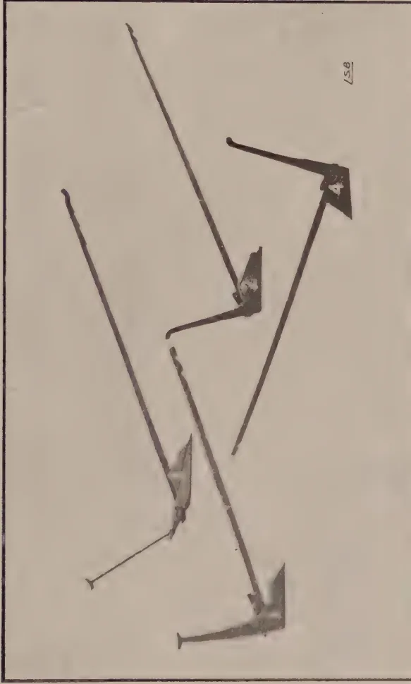
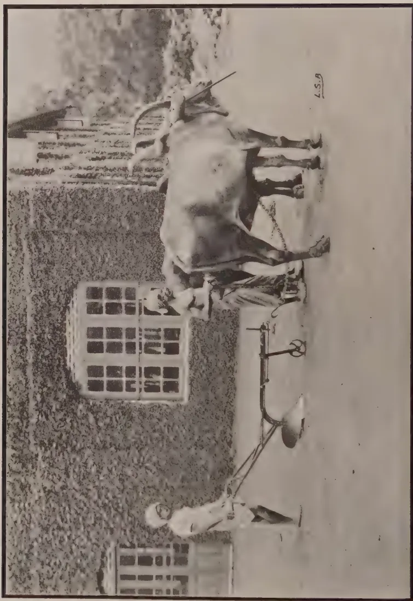
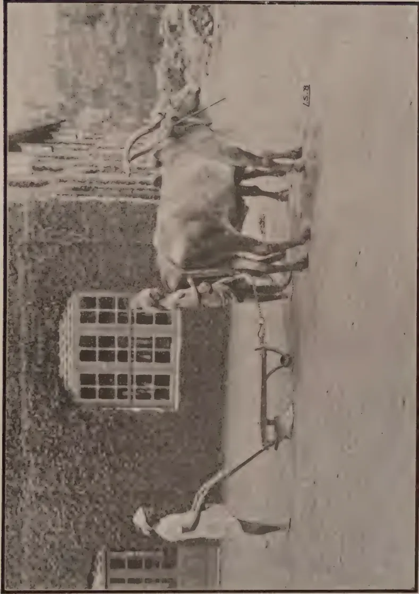
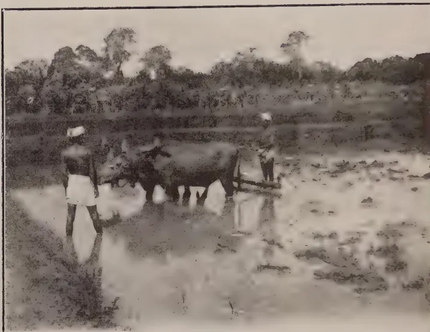
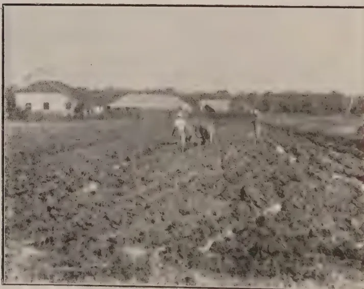

The
Tropical Agriculturist
August, 1927.
Editorial.
Extension of the Work of the
Department of Agriculture.
IN the present number of the Tropical Agriculturist is reproduced the Sessional Paper embodying suggestions for the extension of the work of the Department of Agriculture, together with the recommendations of the Board of Agriculture thereon. These recommendations are before Government and are likely to be approved. Funds for several of them have been sanctioned by the Legislative Council in the Estimates for 1927-28 and others will be given effect to as soon as staff becomes available. Steps have been taken for the acquisition of lands in the North-Western Province and in the Southern Province for the establishment of central agricultural stations and at these the main crops of the districts will be grown, pure-line paddies developed and agricultural education in the vernacular provided for.
68Provision is also being made for visits of small growers to the various experiment stations of the Department and for an improvement of the agricultural magazines which are issued in the vernaculars. By such means it is hoped to bring the work of the Department closer to the smaller cultivator.
One of the most difficult problems which agricultural departments have to face is that bound up with bringing the results of research, investigation and experience into the practice of the cultivator. This is particularly the case with small growers, and it is only by persistent efforts with literature, demonstrations and competitions that improvements in methods can be effected. Improved seeds appeal as soon as the increased crops secured therefrom are demonstrated, and the use of manures and improved implements can be encouraged without difficulty if the costs are within the means of the growers. Attention has been given to the supplies of manures to small growers and it is probable that some definite scheme will shortly be evolved. Investigations in regard to implements have been undertaken and the results of dynamometer tests are included in the present number.
Investigations and research are essential before progress can be effected. An Agricultural Department cannot progress along sound lines until knowledge has been acquired as the result of careful research. It is insufficient to base conclusions upon the experiences of temperate climes and a thorough knowledge of tropical agriculture is only now being slowly built up by the various Institutions and Departments scattered throughout the tropics. No Department can undertake the improvement of the agriculture of the small grower until it is certain of the facts it wishes to demonstrate, and any attempt at hastening to build on insecure foundations is bound to result in ultimate failure.
The recommendations made by the Board of Agriculture are such as can easily be given effect to, and should enable small growers further opportunities of learning how the Department of Agriculture is endeavouring to meet their requirements.
69Original Articles.
A. W. R. JOACHIM, B.Sc., A.I.C., Dip. Ag. (Cantab.),
Agricultural Chemist, Department of Agriculture.
IN previous numbers of this Journal articles have appeared from the pen of the Director of Agriculture on our present day conceptions of soils and manures (4,5). These articles were in the main of a general character and were intended to be the first of a series on the subject. References were occasionally made in them to the work being carried out by the Chemical Division on general soil and manurial problems in Ceylon, and it is with particular reference to the latter that this article is written. Whenever possible mention will be made of the results obtained in other countries, chiefly tropical, on the same problems of investigation, and the results of experiments of special interest to Ceylon agriculturists will be outlined. Among the many soil problems in their relation to Ceylon crops and soils that have been investigated, the following are of chief importance and will be dealt with:—The fixation of atmospheric nitrogen in the soil and the use of legumes in increasing soil fertility, the leaching of fertilisers from and the movements of nitrates in soils, the rôle of organic matter in plant nutrition in the tropics, the decomposition of organic and green manures under tropical conditions, the use of artificial farmyard manure, and organic manures versus artificials. In a further contribution it is hoped to deal with such topics as the general principles of manuring of tropical crops, the use of fertilisers in the manuring of paddy, rubber, tea and coconuts, soil sourness or acidity, the effect of irrigation on soils with special reference to tobacco soils, the importance of soil colloids, the soil-moisture equilibrium, soil surveys, and 'pan-formation.'
The Fixation of Atmospheric Nitrogen in the Soil and the Use of Legumes in Increasing Soil Fertility.—Atmospheric nitrogen fixation is brought about chiefly by a class of soil bacteria called the Azotobacter and those living in the root nodules of leguminous plants. Experiments have been carried out at Peradeniya to test both these methods of fixation, and they have clearly demonstrated the activities of these organisms in this direction under our climatic conditions. Experiments in the laboratory
70on nitrogen fixation show that, if there are no losses due to leaching, and under optimum moisture and aeration conditions, provided there is a sufficiency of organic matter, as much as 112 lb. of nitrate nitrogen are fixed in the soil by the Azotobacter. The advantages of cultivation alone of soils well supplied with humus, in maintaining soil fertility in tropical countries are therefore apparent. At Pusa, in India, field experiments have confirmed the same conclusion (1). With regard to fixation by leguminosae, it is very widely believed that all the nitrogen fixed by the bacteria living in the root nodules goes to the leaf and stem. Experiments at Rothamsted (8) have however definitely shown that there is an increase in the nitrogen content of the soils on which leguminous crops have been grown. This is due to the decomposition of the nodules containing the bacteria. It is because of this increase in nitrogen content in the soil that in rotations in temperate climates, a leguminous crop is always taken before wheat or other cereal. Two or more cuttings of the crop are first taken, and only then are the roots and stubble ploughed in. A pot experiment carried out in this laboratory with Vigna Oligosperma in its relation to nitrogen fixation, has demonstrated almost to a certainty the advantage of growing a leguminous crop, if nitrogen conservation in the soil is the object in view. There has been found an excess of nitrogen amounting to about 200 lb. per acre in the pots containing Vigna over that found in the controls. The use of legumes as a means of increasing soil fertility and in land reclamation has been successfully adopted in several countries, e.g., Germany and America. For the successful growth of leguminous crops, however, it is essential that the specific bacteria associated with the root nodules of these plants be present, or introduced into the soil. This shows the occasional need for 'soil inoculation.' Inoculation can be made either of the soil or of the seed. Investigations have recently been carried out at Rothamsted (2) on bacterial 'inoculation,' and what was at one time only a venture doomed to failure, has now been made a success. The results with lucerne tried in various parts of England where the crop was not grown before, have been very encouraging. Cultural solutions of the necessary bacteria for various legumes are now being prepared, and with proper and judicious usage can be successfully employed to give good crops on areas on which they are being grown for the first time. In Ceylon where leguminous crops are being tried in districts they were not grown before, it may be advisable to adopt some system of soil or seed inoculation to supply the specific bacteria needed. Soil from an area in which the legumes have grown well should be sown along with the seed in new areas in which it is being established. In connection with the use of legumes as cover crops it has been reported
71that the cover has a deleterious effect on the main crop. e.g., tea, but in these instances no forking or other cultural operations had been done. Forking however is essential for proper soil aeration and to give the roots of the main crop a chance of developing, and where forking has been done, no ill-effects have been noticed. It has also frequently been observed in Sumatra that the growth of young plantations of rubber, with a cover crop, is inferior to that of plantations on clean weeded areas. De Jong (3) attributes this to the fact that the humus in the cleaned soil is quickly decomposed and its food material becomes available to the plants. To prevent this inferior growth he recommends manuring with phosphates, and as this is the fertilising constituent chiefly needed by leguminous crops, an application of it will satisfy the needs of both cover and crop, which latter otherwise suffers in the competition for the phosphates in the soil. It is also probable that forking was necessary for root-development of the young rubber.
The Leaching of Fertilisers from Soils.—Under Ceylon climatic conditions, with heavy rainfall in certain parts of the Island lasting sometimes over long periods, it may be expected that large amounts of the soluble fertilisers applied to the soil will be lost. A preliminary series of laboratory experiments with soluble fertilisers showed that with the exception of nitrate of soda and of potash, but little of the other fertilisers applied are lost from the soil through leaching. In the case of nitrate with a soil layer 6 in. deep, 15% of the amount of nitrate added was lost. No appreciable losses of potash or phosphoric acid were found. Since this laboratory investigation was completed a new series of experiments on the leaching of fertilisers have been started in pots containing soil to a depth of 3 feet. The pots have been exposed to the open. In some of them a crop is grown and others are bare. The drainage waters are periodically collected and analysed. The results of the experiment, which has now been carried on for the last six months, seem to indicate that large amounts of nitrogen fixed in the soil by the Azotobacter are lost from the soil. The losses are dependent on the rainfall, and are much less from the pots containing the crops. This has also been the experience of soil workers at Pusa and Nagpur in India as the following extract will show. (2) "It also appears that very considerable quantities of nitrates are washed into the sub-soil and ultimately lost, and that there is only a very restricted upward movement of these sub-soil nitrates." This latter point is one of great significance, for the idea has been general that there is an upward movement of nitrates in the soil from the lower layers, and that what is washed into the lower layers will, by capillarity, be brought back to the upper layers. But this has been shown to be not so. Hence the importance of the time
72of application of soluble manures like nitrates. These should, as far as possible, be applied towards the end of the rainy season.
The Role of Organic Matter in Plant Nutrition in the Tropics.—In tropical countries like Ceylon, the organic matter of the soil is by far one of its most important constituents. Its effects are chemical, physical and biological. It is directly and indirectly the main source of nitrogen in the soil and forms the chief food of the numerous soil micro-organisms connected with nitrogen fixation. "There also appears to be evidence, though not very definite that organic substances produced during the decomposition of organic matter in the soil may have a direct effect on the plant, different from that of the ordinary plant foods," so says Russell (2). The effect of these substances is to stimulate growth of the plants. In the tropics our experience is that the organic content of soils rapidly diminishes, and if we are to maintain the full activities of beneficial soil micro-organisms, the soil will have to be supplied with a regular supply of organic matter. Under conditions in temperate regions Stoklasa (6) has found that if no replacement of carbon takes place, the store of carbon in the soil would be exhausted in 20 years. This period, judging from the results of experiments carried out at Peradeniya, would be considerably less in the tropics. Stoklasa also finds that to obtain optimum effects with mineral manures, chiefly nitrogenous, the soil must contain easily decomposed organic substances in sufficient quantity (6). There is however one fact which must be mentioned and that is, as Russell states, (2) that organic manures poor in nitrogen are of little use, for the reason that the soil organisms in obtaining their energy supply from them consume more ammonia and nitrate than they produce. The minimum percentage of nitrogen an organic manure should contain to be useful to the soil is quoted as being about 2%. The physical effect of organic matter in soils is due chiefly to the 'humus' formed as a result of its decomposition. Humus belongs to a class of substance called 'colloids.' It absorbs the water and manurial substances of the soil, and tends to make a sandy soil more compact and a clay soil more friable. Its presence in the soil serves to diminish the resistance of the soil to the movements of tillage implements. This has been very clearly demonstrated at Rothamsted from trials with the dynamometer—an appliance for recording the draw-bar pull on tractors, etc. (2).
The Decomposition of Organic Matter in Soil.—Organic matter can be supplied to the soil either in the form of farmyard manure, oil cakes, or green-manures. In Ceylon, where farmyard manure is difficult to get and oil cakes expensive, green manuring is a solution to the difficulty of a regular supply of humus to the soil. Green-manuring does not necessarily imply
73the use of leguminous crops only, but non-leguminous leafy material can be used as well. It should however be pointed out that if green-manuring a soil area is to be done with the leafy material of a crop grown on that particular soil area, then, only leguminous crops should be used for the purpose. If however the green-material is procured from an outside source, any green leafy material may be used, for, so far as analytical data go, the leafy material of a non-leguminous plant may be just as rich in nitrogen, organic matter, potash and phosphoric acid as that from a leguminous plant. As regards the decomposition of green material in the soil the experiments at Peradeniya, confirming those carried out by workers in India (9) have shown that maximum 'nitrification' or nitrate accumulation in the soil takes place between the sixth and eighth week after the burial of the green-material, (7) but that nitrification takes place subsequent to this as well, but to a lesser extent, and that after the 5th or 6th month the direct effects of green-manuring from the standpoint of nitrogen are hardly appreciable. It has to be added that the decomposed organic material will serve as food for the nitrifying bacteria, and therefore continue to maintain the soil fertility. The amount of nitrate present in the soil at any time was dependent on rainfall. With regard to organic manures the experiments at Peradeniya show much the same results as with green-manures, maximum nitrification taking place between the 4th and 8th week. The nitrification percentages varied in most cases from 85 to 90%. A definite soil moisture content is necessary for optimum nitrification to take place and this amounts to about half the saturation moisture content of the soil. The field experiments at present being carried out with green-manures have been designed to ascertain the additional benefits to the soil when leguminous crops are grown in situ and then ploughed into the soil. The organic manure field experiments, owing to the unusual rainfall conditions, are not as conclusive as it was hoped they would have been. They have more or less confirmed the results of the field green-manure experiments, viz., that complete decomposition from the nitrogen standpoint takes place in about 5 or 6 months.
The Use of Artificial Farmyard Manure.—Within recent years successful experiments inaugurated at Rothamsted have shown the use to which soil micro-organisms can be put to, in the conversion of such materials as straw and other vegetable matter into decomposed material much like ordinary farmyard manure. All that is necessary to bring about the change, besides a source of organic material is adequate moisture, some nitrogenous material—organic like cattle urine or inorganic like sulphate of ammonia—calcium carbonate to neutralize the lime and a little phosphate and potash for the bacteria to feed on.
74Experiments have been tried at the Anuradhapura Experiment Station with sisal hemp refuse as the basic material and at Mr. C. E. A. Dias's estate in Horana with coir and saw dust. The time of decomposition at the Anuradhapura Station was 5 months, thus coinciding with the period of decomposition of green manures at Peradeniya. The starter used was 'Adco,' but as stated before any nitrogenous starter with sufficient calcium carbonate to neutralize the acids formed is all that is needed. In Ceylon such material as coir dust, sugar-cane and citronella leaf residues, in places where they are most easily obtainable can be converted with advantage to artificial farmyard manure. The organic matter taken away from the soil may thus be replaced comparatively easily. Experiments with artificial farmyard manure have been successfully tried in S. India (11) as well and it has there been found that it is nearly as efficient as ordinary cattle manure. N. Aiyar (10) recommends the use of 4.2 lb. sulphate of ammonia and 5.6 lb. of calcium carbonate, for one cwt. of raw material. Cyanamide may be substituted for the artificials. The percentage of nitrogen contained in the final material generally varies from 2.2.5.
Organic Manures Versus Artificials.—Very large quantities of artificial fertilisers are being used in Ceylon at the present time for the manuring of our perennial crops, and it is occasionally being asked, whether, in view of the fact that artificial fertilisers are much cheaper than organic manures per unit of fertilising constituents, the former should not be advantageously used instead of the latter. The importance of organic matter in tropical soils having already been pointed out, it will be realised that in the manuring of our perennial crops organic manures or other bulky organic material should be included. While undoubtedly artificial fertilisers are of benefit to the crop, the continued use of these bring about certain harmful effects on the physical condition of the soil, besides indirectly affecting adversely the soil micro-organic population. There are also greater losses of fertilising constituents from artificial fertilisers during periods of heavy rainfall than from organic manures. Experiments at Rothamsted and elsewhere have shown that whereas fields manured with artificials alone gave at first better yields than those with farmyard manure, later on the latter plots proved the superior. Organic manures like cattle manure, etc., have a more steady effect on crop yields. Again it has been found that it is impossible to maintain yields on plots receiving artificials only, except where the dressings are extravagantly high, so says Russell. Stoklasa (6) puts forward the view that organic substances in the soil are much more energetically decomposed in the presence of nitrogen, phosphorus, potassium, calcium and iron. For these reasons it is advisable in manuring our perennial
75crops to use artificials in combination with bulky organic substances, e.g., green manures.
T. H. HOLLAND, M.C., M.S.E.A.C.,
Manager, Experiment Station, Peradeniya;
and
L. LORD, M.A.,
Economic Botanist.
THE primary object of these tests was to determine the draw-bar pull of various implements and it must be emphasised that the tests were not designed to discover the most economic implement for any particular purpose. Although the quality of the work of the various implements was noted it was not possible on this occasion to determine the time taken to plough a unit area. This information will be obtained from further trials. However, from observation and a study of the data supplied by these tests, it has been found possible to form certain general conclusions as to the most suitable implements for the conditions under which they were tried.
Tests were carried out for three types of work:—
The factors to be taken into consideration in determining the most suitable implement to be recommended include cost, draught, quality of work, and work done in a given time. Data on all except the last factor will be found in the following tables:—
77Table I.Dry land ploughing. Old paddy plots ploughed and disced about a month before the trials and covered with a light growth of weeds, mostly couch grass. Soil sandy-loam.
| IMPLEMENT | Approximate price in Ceylon Rs. 00 | Average draw-bar pull. Cwts. | Average depth of work. inches. | REMARKS. |
|---|---|---|---|---|
| A. PLOUGHS. | ||||
| 1. Ransome's All Steel "Victory" Plough | 45.00 | 2 5 8 | 5 | Excellent work. Turns a neat furrow. Mould board scours well. |
| 2. Cooke's Light L.N.O. Plough with one wheel | 128.00 | 3 3 8 | 5 | Very fair work. Mould board not scouring well. |
| 3. Ransome's "Cyprus" Light Steel Plough | 66.50 | 2 to 5 | 3 to 6 | The work was unsatisfactory. It was found impossible to set the plough to work at an even depth: the plough dug in and ran out of the ground alternately. |
| 4. Howard's "Sinhalese" Plough | 34.00 | 2 3 8 | 4 | An imperfectly turned furrow owing to difficulty in steering the plough. |
| 5. "Meston" Plough | 11.00 | 1 3 8 | 3 | Not very satisfactory. It is difficult to keep the plough straight and maintain an even depth. |
| 6. Molegode Plough | 7.50 | 1 3 8 | 3 | The plough stirs the soil well but does not turn a furrow. |
| 7. Disc-harrow 8 discs (full setting) |
180.00 | 3 | - | Unploughed land. Discs set at extreme angle and therefore giving heaviest draught. Stirred surface soil well. |
| 8. (full setting) | , | 3 1 8 | - | After ploughing. Stirred soil well. |
| IMPLEMENT | Approximate price in Ceylon. Rs. Cts. | Average draw-bar pull Cwt. | Average depth of work. inches. | REMARKS. |
|---|---|---|---|---|
| Disc-harrow (contd.) 8 Discs (full setting) | 180 | 3½ | - | Unploughed land after one discing. |
| " (half setting) | " | 2½ | - | Unploughed land. Work almost as good as with full setting. |
| " (half setting) | " | 2½ | - | After ploughing. Work almost as good as with full setting. |
| " (half setting) | " | 2½ | - | Unploughed land after one discing. Work almost as good as with full setting. |
| B. CULTIVATORS, Etc. | ||||
| 8. Planet Junior Cultivator fitted with 3 tines and 2 small mould boards | 70-00 | 3 | 2½ | Unploughed land. The cultivator broke up the soil fairly satisfactorily. |
| " | " | 1½ | - | After ploughing. The cultivator stirred the soil satisfactorily. |
| 9. Planet Junior Cultivator fitted with 5 tines | 70-00 | 1½ | 2½ | Unploughed land. The cultivator broke up the soil fairly well. |
| " | " | 1½ | - | After ploughing. The cultivator stirred the soil satisfactorily. |
| 10. Burmese Harrow with 5 teeth | 6-00 | 1½ | - | Unploughed land. Little penetration of the soil until the implement had gone over the land several times. |
| " | " | 1 7 8 | - | After ploughing. The implement satisfactorily stirred the soil. A man stood on the harrow. |
Ploughing for paddy. First ploughing on stubble.
| INSTRUMENT | Approximate price landed in Colombo. Rs. Cts. |
Average draw bar pull Cwt. |
Average depth of work. Inches. |
REMARKS. | Fields flooded | Soil | Clay loam |
|---|---|---|---|---|---|---|---|
| 1. Ransome's All Steel "Victory" Plough | 45.00 | 1 1/2 S | 5 | Excellent work; an even, well turned furrow. | |||
| 2. Ransome's Wood beam P.L.K. Plough with wheel | 47.60 | 1 | 3 1/2 | A neat, well turned furrow; not so wide as that turned by the "Victory" plough. Good work. | |||
| 3. Howard's "Sandharse" Plough | 34.00 | 2 1/2 | 5 | Turns a good furrow, but not so good as the "Victory," and the plough is more difficult to adjust and control. | |||
| 4. "Meston" Plough | 44.00 | 1 | 3 1/2 | Work inferior to that performed by the P.L.K., and plough more difficult to control. | |||
| 5. Molecode Plough | 7.50 | 1 1/2 S | 3 | Furrow not inverted. The soil is stirred in the same manner as by a village plough though perhaps slightly more effective. | |||
| 6. Kandyan Plough | 5.00 | 1 | 3 1/2 | Fair work. | |||
| 7. Dawath Plough | 5.00 | 1 | 1 | Ploughs do not penetrate, and are unsatisfactory under the conditions of these trials. | |||
| 8. Badawath Plough | 5.00 | 1 | 1 | ||||
| 9. Low Country Plough | 5.00 | 1 | 1 1/2 | Not such good work as the Kandyan. |
Ploughing for Paddy. Second or mud ploughing in fields previously ploughed and now flooded.
Soil—clay-loam.
| IMPLEMENT | Approximate price landed in Colombo. Rs. Cts. |
Average draw-bar pull Cwts. |
Average depth of work. inches. |
REMARKS. |
|---|---|---|---|---|
| A. PLOUCHS. | ||||
| 1. Howard's "Sinhalese" Plough | 34.00 | 1 1/8 | - | Turns soil well. Work not very deep. |
| 2. "Meston" Plough | 11.00 | 2 1/8 | - | Turns soil fairly satisfactorily. |
| 3. Ransome's light "Cyprus" Plough | 66.50 | - | - | Quite unsatisfactory. It is difficult to set the plough at the correct depth. It either digs in or slides along the surface. |
| 4. Ransome's Wood-beam P.I.K. Plough | 47.60 | 1 1/2 | - | Good work. Turns over the soil well. |
| 5. Molecode Plough | 7.50 | 2 | - | The plough only stirs the soil and does not turn it over. Does slightly better work than the Kandyan plough. |
| 6. Kandyan Plough | 5.00 | 1 5/8 | - | Pull rather variable. No furrow is turned. |
| 7. Deawath Plough | 5.00 | 1 | - | Work inferior to that of the Kandyan plough. Soil and weeds tend to collect under the beam owing to abrupt fall above tongue (see Plate I). |
| 8. Budawath Plough | 5.00 | 1 1/8 | - | Work better than Deawath plough but inferior to Kandyan. |
| 9. Low-Country Plough | 5.00 | 3/8 | - | Work inferior to Kandyan. |
| B. CULTIVATORS, Etc. | ||||
| 1. Burmese Harrow with 5 teeth | 6.00 | 2 1/2 | - | Implement used after first ploughing in place of a plough for the second and third ploughings. A man stood on the harrow. Satisfactory work done. |
| " " with 3 teeth | 6.00 | 1 7/8 | - | A man stood on the harrow. Work satisfactory. |

Photo by
L. S. Bertus

A black and white photograph showing a plowing scene. In the foreground, a man in a light-colored shirt and dark trousers stands next to a large, light-colored ox or bull. The ox is harnessed to a plow. Another man, wearing a light-colored shirt and dark trousers, stands further back, holding the plow's handle. The plow is being pulled across a field. In the background, there is a building with a large, multi-paned window. The photo is signed 'L.S.B.' in the bottom right corner.Photo by
Ransome's "Victory" Plough.
L. S. Bates
811. Dry Land Cultivation.—The use of agricultural implements for dry land cultivation in Ceylon can be considered under the following headings:—
(1) Dry ploughing for paddy and other crops in the Jaffna Peninsula, and certain districts in the North and East of the Island.
In the dry districts it is most desirable that all weed growth and green material found on the surface of the land should be turned in, thus increasing the amount of humus in the soil and increasing its capacity for retaining moisture. The plough found in these trials to achieve this most efficiently was undoubtedly the "Victory;" and for the work done the draught was low.
It has been found that a pair of Indian bulls of the type generally imported into the Jaffna Peninsula can pull a "Victory" plough without undue fatigue, and where such a pair of animals, or a good pair of buffaloes, is available, and the cultivator can afford the cost of the implement, the "Victory" can be confidently recommended.
With regard to the other ploughs: the cost and draught of the Cooke's L.N.O. rule it out of the discussion.
The work done by Howard's "Sinhalese" plough was inferior to that done by the "Victory," and though the cost is less the draught is almost the same.
Owing to the small size of the mould board of the "Meston" plough and the difficulty of keeping this plough straight and at an even depth the inversion of the furrow was imperfect. The draught however is sufficiently low to enable the plough to be pulled by a pair of local animals and the work may be said to be an improvement on that done by a country plough.
The Molegode plough differs from the Village plough by the addition of an iron plate designed to perform the functions of a mould board. Owing to its small size and shape this plate does not invert a furrow. The plough however stirs the soil rather more effectively than a country plough and the cost and draught are not very much larger.
Another plough, Ransome's Wood-beam P.I.K., was tried, but owing to the fact that the share was very worn and new shares were not obtainable locally, records were only taken of its performance on paddy land.
The Burmese harrow was scarcely able to penetrate unploughed land, but for use after ploughing in the preparation of a seed bed the work done was little inferior to that of more expensive types of cultivator.
82(2) Cultivation on Coconut Estates.—Proprietors of coconut estates could generally afford a rather more expensive implement and a more powerful type of draught animal. Here again the effective burying of weed growth is desirable and for this purpose the "Victory" plough can be confidently recommended.
For shallow cultivation a disc-harrow is probably the most effective implement. The cost is high and the draught considerable, but it is to be noted that the work done with the discs set at half the extreme angle was practically as effective as at the full setting. Even at the full setting a pair of good Indian bulls can pull a disc-harrow with eight discs all day.
A Planet Junior Cultivator will also do such work fairly effectively and the cost of the implement is considerably less. The draught however is higher in proportion to the size of the implement and the rate of covering the ground.
(ii) First Ploughing for Paddy.—An examination of the results in Table II. shows that one modern plough, the P.I.K. has no greater draught than the local Kandyan plough in spite of the fact that the P.I.K. plough does more and better work. It ploughs a wider furrow and inverts the furrow, the latter fact being very important when large quantities of weeds or green manure have to be buried. The Molegode plough, an improved model of the local plough, does better work than the Kandyan plough but does not invert the furrow. The draught was cwt. compared with 1 cwt. of the Kandyan and P.I.K. Its chief merit is cheapness. The "Victory" plough does the best work of all the ploughs tested and will be even better than the P.I.K. for ploughing in green manures. Its draught was cwt.—Howard's "Sinhalese" plough though doing good work had a draught of cwt. which is probably on the high side for use with village cattle. The "Meston" plough does better work than the "Molegode," is slightly more costly and had cwt. more draught.
However high the quality of the work of any plough is, a plough is useless unless its draught is such that it can be pulled by the cattle available. It is difficult to determine with any great accuracy what pull an average pair of village cattle can exert, but ordinary buffaloes at Anuradhapura have little difficulty in pulling a three and five-toothed Burmese Harrow.* The draw-bar pull of a three-toothed Burmese Harrow in similar soil at Peradeniya is cwt. The Molegode plough which can be drawn by village cattle, has, in mud ploughing, a draw-bar pull of 2 cwt. (see Table III.). There is ground, therefore, for assuming that village cattle can cope with a draught of 2 cwt. although for continuous work about cwt. might be a safer estimate.
* Since this article was written the "Victory" plough has been successfully used with buffaloes.

A black and white photograph showing a farmer in a light-colored shirt and a wide-brimmed hat guiding two oxen through a field. The oxen are harnessed to a large, heavy-duty plow. The farmer is holding the reins of the oxen. The plow is being used to turn the soil. In the background, there is a field with some trees or bushes. The image is framed by a thick black border. There is a small label "LS. 2" in the bottom right corner of the image.1888
L. S. 1888
Ransome's P. I. K. Plough.

A black and white photograph showing two people standing in a muddy field, guiding two buffaloes that are pulling a plow. The background features a line of trees under a clear sky.Harrowing with Buffaloes.

A black and white photograph showing a person standing in a field, guiding two buffaloes that are pulling a plow. In the background, there are several buildings and a line of trees.Ploughing with "Victory" Plough
and Buffaloes.
The best plough to use in the first ploughing for paddy depends not only upon the draught and upon the cost of the plough but also on the kind of work to be done. That is to say a plough effective in breaking up a clean stubble is not necessarily effective for ploughing in green manure. Considering the cost, draught and quality of the work, the P.I.K. would appear to be the best implement to use in the first ploughing for paddy if green manures or a heavy weed growth have to be turned in. Where particularly good cattle are available and a heavy crop of green manure is to be dealt with the "Victory" plough would be more effective and would do the work quicker. The cost of both these ploughs is high for the ordinary cultivator.
The problem of determining the best plough for breaking a clean paddy stubble is more difficult. The problem is really to determine the most economical plough and to do this the method of the subsequent preparation of the land must be considered. In the first place, it may be laid down that ploughing with a modern plough gives no increase in the yield of paddy if the subsequent puddling is thoroughly carried out.
An experiment was laid down in Burma in 1924-25 to determine the effect of ploughing for paddy with an English furrow-turning plough called the "Jat." In reporting the experiment Watson7 says:—"So far as the results go they indicate that the method of ploughing has practically no effect on the final yield of the crop." But he goes on to say that—"In paddy cultivation here the cultivation given after ploughing is so thorough that small differences in ploughing are swallowed up almost entirely, but continual deeper ploughing should show some effect later. Meanwhile the chief advantage of using an improved plough is that in practice it does reduce the number of harrowings required subsequently and effects a saving of eight to twelve annas per acre in the cost of cultivation."
For Ceylon it may be said that a Molegode or a local plough will be efficient in breaking a clean stubble so long as a thorough subsequent puddling is carried out by means of a Burmese Harrow. Without the use of such an implement the P.I.K. plough is recommended, even with the use of a harrow the P.I.K. plough may reduce the cost of puddling and thus prove to be more economical than the local plough. The strong weed growth in Ceylon, however, suggests that more efficient preparation of the seed-bed with the object of reducing weed growth would be repaid many times in the increased crop obtained.
7 Watson R. Report on the Hmawbi Agricultural Station for the year ended 30th June, 1921.
84(iii) Mud Ploughing.—Of the different ploughs tested the P.I.K. was by far the most efficient. The low draught (1 1 8 cwt.) of Howard's Sinhalese plough was unexpected as previously its draught was greater than the P.I.K. The "Cyprus" plough which is successfully used in Upper Burma was found to be very difficult to adjust and was unsatisfactory in the conditions of the tests. The "Meston" and Molegode ploughs had the biggest draughts. The mud ploughing done by a local plough, if done frequently enough, will produce an excellent puddle but the work is slow. All that is necessary is to use some implement that will thoroughly stir and puddle the soil over the whole field. For puddling the extensive paddy lands of Burma a harrow is universally used and this has been introduced into Ceylon with success. In place of the one single furrow of the local plough it makes three or five furrows according to the adjustment and thus covers the ground much more quickly, and its cost is little more than the cost of a local plough. Doubts have been expressed as to the capability of village buffaloes to pull the Burmese Harrow but these are groundless. For the last two seasons village buffaloes have been used with Burmese Harrows at Anuradhapura for preparing a well puddled seed-bed. Where a strong weed growth has not been allowed to grow up after the first ploughing the writers recommend substituting the mud ploughings by a thorough wet harrowing with the Burmese Harrow. Where there is a strong weed growth in consequence of the puddling (or mudding) of the fields having been delayed it will be necessary again to plough before harrowing.
Summary.—1. The results of draw-bar tests of various agricultural implements are tabulated and discussed.
2. For dry cultivation other than coconut estates the "Victory" plough is recommended where the cultivator can afford the price and has sufficiently powerful cattle.
3. The "Victory" plough is recommended for use on coconut estates for ploughing in heavy weed growth or green manures. For shallow cultivation the disc-harrow is the most effective implement.
4. For the first ploughing for paddy; if there is a strong weed growth or green manure to plough in, the P.I.K. plough is recommended for use with average village cattle. Where cattle are above average in size the "Victory" plough is recommended. If there is a clean stubble the P.I.K. plough or the local Kandyan plough followed by thorough subsequent harrowings, are recommended.
5. Thorough harrowing with a Burmese harrow is recommended as a substitute for the mud ploughings.
85THE proposals which were submitted to the Legislative Council for the establishment of a research scheme for the coconut industry were not favourably received. A meeting of the Unofficial members met on May 29, 1925, and I was invited to be present to assist in the deliberations. The proposals were discussed from all aspects, and eventually the honourable members decided that they could not support the Bill.
The resolution passed at this meeting was as follows:—
“In the opinion of this meeting, the proposed scheme for Coconut Research is not acceptable, but the members would agree to support a general scheme for the re-organization of the Department of Agriculture, so as to include provision in different areas for research work embracing all products under the Department of Agriculture.”
The main objections to the proposals for Coconut Research, as I reported to Government, appeared to be as follows:—
(1) The unofficial members of the Legislative Council object to handing over Government funds for expenditure by a Committee.
(2) The members desire that all agricultural research work should be carried out by the Department of Agriculture. They do not agree to the adoption of the United Kingdom system of encouraging industries to provide for their own research work, but desire the United States system to be followed.
(3) The members stated that they were prepared to vote funds for full provision for research, and, if necessary, sanction special increased export duties—such duties being paid into general revenue.
(4) The members were desirous that all officers working on agricultural research should be entitled to equal privileges in regard to pay, pension, leave, &c. They did not agree to some officers being Government officers with full pension rights, &c., and to other officers—working under the proposed research schemes—being non-Government officers and not entitled to pension rights, &c.
(5) The members all expressed the desire that more research work should be done with minor products. They preferred the establishment of divisional experimental stations rather than stations especially designed for single products. They all agreed as to the necessity of further experimental work for coconuts and would, I believe, vote the funds required for the establishment of an experimental station in the North-Western Division—such station to do experimental work with coconuts and with other products grown in that division.
86The meeting appeared to favour the development to the fullest extent of the work of divisional agricultural officers and the provision of experimental stations and technical assistants. My original outline proposals, as published in Sessional Paper I. of 1918, were alluded to by more than one member in this connection. It would therefore be well to indicate how far the recommendations contained therein have been given effect to, what still requires to be done, and what additional recommendations should be submitted in order to comply with the wishes of the unofficial members of the Legislative Council for a fully equipped and comprehensive Department of Agriculture.
The recommendation made was to divide the Island into six agricultural divisions, and that the officers in charge of these divisions should have executive control of agricultural operations; experiments and investigations, agricultural education, school gardens, and co-operative credit societies. Up to the present four divisions have been started, viz., the Northern, Central, Southern, and North-Western. Progress has not been as rapid as some of the present members of the Legislative Council would have liked to have seen, but it must not be overlooked that the policy of decentralization as originally proposed was uncertain during the period during which the Retrenchment Committee was sitting, that it was considered desirable that some Ceylonese should be specially trained for staff posts and that funds have not always been available for the development required. Now that the policy of six agricultural divisions is agreed upon, it will be advantageous to review the position as it stands to-day and to indicate clearly the more urgent requirements.
This division was begun in 1921 and considerable progress has been made. It embraces the Northern Province, the North-Central Province, and the Trincomalee District of the Eastern Province. At Jaffna the main work has been in connection with the cultivation of tobacco, the improvement of chillies and kurakkan, trials with fodders for cattle, the increase of green manuring of paddy, the trial of artificial manures for paddy, and the improvement of the methods of cultivation of coconuts. In all directions solid progress has been made. The headquarters of the division are situated near the Kachcheri in buildings secured temporarily from the Forest Department. There has been a desire on the part of some that the headquarters should be transferred to Tinnevelly Experiment Station, and after consideration I am of opinion that it might be advantageous to do so. This will involve the acquisition of land and the erection of the necessary buildings. An additional officer will be required if the contemplated short courses in the vernacular are undertaken at the school. The Anuradhapura station is mainly a developmental station and is also the main paddy-breeding station of the Department. An area has also been set aside solely for the production of paddies for the North-Central Province. Work is considerably hampered on this station by a serious shortage of labour and to its unhealthiness during the fever season. This station, although it has been in existence since 1913, has not yet been provided with a permanent store for products other than paddy and has no satisfactory cattle sheds or manure pit. Further quarters for staff are also required, and an officer for agricultural instruction and inspection of school gardens in the Province is now a necessity. The number of school gardens is increasing. The selection of land for the Mullaitivu Experiment Station has been made, and
87provision for a beginning on this station this year is being applied for. The actual urgent requirements of the Northern Division are as follows:—
Jaffna Headquarters.
| Rs. | |
|---|---|
| (1) Acquisition of land adjoining the Experiment Station and school for residences for Divisional Agricultural Officer, Agricultural Instructor, and clerical staff, estimated cost | 7,500 |
| (2) Residence for Divisional Agricultural Officer | 25,000 |
| (3) Office for the Divisional Agricultural Officer | 10,000 |
| (4) Residence for Agricultural Instructor | 10,500 |
| (5) Residence for additional school officer | 10,500 |
| (6) Residences for two clerks | 13,000 |
Experiment Station and School, Jaffna.
| (1) Store for tobacco and produce of station | 8,000 |
Anuradhapura Experiment Station.
| (1) Additional ten-roomed cooly lines | 6,000 |
| (2) Store for produce of station | 8,000 |
| (3) Cattle sheds and manure pit | 4,000 |
| (4) Residence for Assistant to Manager | 6,500 |
| (5) Residence for Agricultural Instructor and Inspector of School Gardens | 10,500 |
| (6) Residence for clerk | 6,500 |
Iranamadu Paddy Seed Farm.—Work on this station has begun this year and 20 acres of paddy will be cultivated for the siripokam crop this year. Temporary buildings are being put up, but these will have to be replaced later on with permanent structures. The first building which will be required will be the store for the storage of pure-line seed paddies and for manures. This is estimated to cost Rs. 10,000. An additional officer will also be required next year in order to provide for closer supervision and to act as a reserve officer during the fever season.
Mannar Experiment Station.—This consists of 3 acres of high land and 5 acres of paddy land. Work was begun last year and temporary buildings have been erected for the Agricultural Instructor, Mannar, who is stationed here. This will later on have to be replaced by a permanent structure.
Mullaitivu Experiment Station.—This station has been under consideration for some time and it was contemplated to open a small station this year. As Mr. Hilson, the Madras Cotton Specialist, considers, however, that a cotton and rotation crop station would be necessary here for the Wanni, I have had the land selected. Five acres of low land for paddy is also being selected. This will involve the stationing of another Agricultural Instructor here for the Mullaitivu District—a request which has been made to me for some years past, but which I have had to postpone recommending until other districts had been provided with staff. The cost of these proposals will be: First year, Rs. 4,000; second year, Rs. 3,000; third year, Rs. 2,500.
Trincomalee.—The Experiment Station at Kanniya is being enlarged and is being converted into a paddy station, solely for the testing of pure-line paddies. The trials that have been made there have been successful and two types have given very good results. These types are being multiplied and have already been distributed to cultivators in several parts of the Trincomalee District. This work will be continued and extended. The sugar-cane experiment station at Allai has had a most unfavourable season to contend with. It was partly flooded in the heavy rains of the north-east monsoon and has subsequently suffered most severely from drought. This
88station is only of a temporary character in order to secure data required in connection with the consideration of the extension of the economic resources of the Colony, and will be closed as soon as these data have been secured, i.e., in about three years' time. With the closing down of this station I would propose the opening of another paddy station in the Tamblegam area.
The Northern Division would then be staffed by—
Divisional Agricultural Officer, Jaffna.
Manager, Experiment Station, Anuradhapura.
Agricultural School, three officers—increase of one.
Agricultural Instructors, five officers—increase of two.
Experiment Station Officers at Anuradhapura, Iranamadu, and Allai, five officers—increase of one.
Inspector of Co-operative Societies, one officer.
This would involve an initial increase under Personal Emoluments of Rs. 4,620 per annum, an initial additional outlay of Rs. 4,000 for the Vavuniya Experiment Station, with additional annually recurrent expenditure, over and above the present allocations under Other Charges for this division, of Rs. 2,500. An expenditure of Rs. 143,000 is also required on public works before the division as at present constituted can be considered to be equipped for its work.
This division was begun in 1920. It embraces the whole of the Southern Province and the Kalutara District of the Western Province. It has the following experiment stations:—
(1) Bandaragama.—Rayigam korale of the Western Province.
(2) Kobowela.—Paddy station in Pasdun korale east of the Western Province.
(3) Batapola.—Mixed station in Wellaboda pattu of the Galle District.
(4) Akmimana.—Paddy station in Four Gravets, Galle.
(5) Borala.—Weligam korale of Matara District of the Southern Province.
(6) Tihagoda.—Paddy station in Wellaboda pattu, Matara District.
(7) Ambalantota.—Major cotton station, Hambantota District.
(8) Wellipatanveila.—Minor cotton station, Hambantota District.
(9) Daborella.—Minor cotton station, Hambantota District.
It is staffed by the following officers:—
Divisional Agricultural Officer—Headquarters, Galle.
Plant Pest Inspector, Southern—Headquarters, Galle.
Agricultural Instructors as follows:—Galle, Ambalangoda, Pandura, Matugama, Weligama, Mahagama, Matara, Tangalla, and Ambalantota, nine.
Inspector of School Gardens, one.
Inspector of Co-operative Societies, one.
Sub-Inspectors of Plant Pests and Diseases, three.
Clerical assistance, two.
I have recently inspected this division and considered carefully with the Divisional Agricultural Officer and the Plant Pest Inspector and certain subordinate officers proposals for the re-organization when necessary and the extension of work in this division.
Headquarters.—This division has no main experiment station, and the agricultural school which was contemplated for the south has not been proceeded with pending a consideration of the results of the school estab-
89lished in Jaffna. It was never contemplated, I am certain, that it would take five years to secure the completion of the buildings for the Jaffna school. The time has, however, come to secure a central experiment station for this division, and it should be selected with a view to establishing a school there a year or two later, when the work of the experiment station has been fully organized. I have considered several sites for this station. My original suggestion of Akminana I am no longer in favour of, as it has been found upon detailed inspection that the land is too broken and irregular for experimental work. There is, however, a property which might be secured to form the basis of this central station—which would also be the headquarters of this division—and further suitable lands, including paddy lands, could be acquired in its neighbourhood. The cost of acquisition of lands suitable for this central station would be not less than Rs. 45,000. The cost of buildings required would be as follows:—
| (1) Residence for Divisional Agricultural Officer | ... | 25,000 |
| (2) Residence for Plant Pest Inspector | ... | 25,000 |
| (3) Offices | ... | 12,500 |
| (4) Residence of Experiment Station Officer | ... | 14,000 |
| (5) Residence for Foreman | ... | 6,500 |
| (6) Cooley lines—20 rooms | ... | 12,000 |
| (7) Residence of Inspector of Co-operative Societies, Inspector of School Gardens, Inspectors of Plant Pests, two at Rs. 10,500 and three at Rs. 6,500 |
... | 40,500 |
| (8) Residences for two clerks | ... | 18,000 |
| (9) Store | ... | 8,000 |
It is probable, as this station will be within the gravets of Galle, that housing accommodation for some of the staff will not be required at the outset, but I consider that it should be indicated clearly what are the possible full requirements. When the agricultural school is established, residences for the school officers will be required, a hostel for the students, a laboratory, and if a dairy is established, up-to-date cattle sheds, manure pits, &c. Whilst I do not advocate substantial buildings as those erected at Jaffna, on account of cost, I do not contemplate that the minimum requirements for a fully equipped school in accordance with the present Ceylon standards would be less than Rs. 120,000.
The annually recurrent expenditure for the maintenance of the central experiment station for this division and for the school would be Rs. 25,000, of which Rs. 15,000 would be recoverable as revenue. This station would carry out experiments with coconuts, rubber, paddy, and minor products such as manioc, sweet potatoes, curry stuffs, &c.
Bandaragama.—This station has been partly developed in rubber, and its revenue now exceeds expenditure. It could be converted into a model rubber station for the small grower and be equipped with a model factory and smoke house suitable for the small grower. At this station, regular conferences especially designed to meet the requirements of the large number of small growers of rubber in the Kalutara District could be held. There is also paddy land suitable for pure line experiments in close proximity to this station. There is also a permanent building on the station which would be utilized as a residence for the Agricultural Instructor, and I am in communication with the Assistant Government Agent in regard to handing it over to the Department. The additional expenditure on this station to fit it with suitable rubber rollers and with a proper smoke house can be met from present votes, and the funds required for the paddy station will be available when Kobowela is closed.
Kobowela.—I propose to close this station as it is not sufficiently central.
90Matugama.—I propose to open a paddy station here for Pasdun korale, and suitable land for lease is now being selected. The expenditure on this station can be met from the present votes, but it is probable that a residence for the Agricultural Instructor will have to be erected near to this station.
It is estimated that this will cost Rs. 10,500 plus the acquisition of the necessary site.
Batapola.—This is a mixed station. At present pineapples are giving the best results, but trials are to be carried out with Roselle fibre, papaw for papaine, ground-nuts, and with manurial experiments for cinnamon. There is paddy land adjoining this station which would be suitable for pure-line work and for manurial experiments. Inquiries are now being made with a view to securing a lease of the necessary land, and the expenditure can be met from the present paddy vote. The Agricultural Instructor should be required to live on this station, and the present temporary building could be extended and improved at a cost of Rs. 750, but eventually a permanent residence will be required, and this will cost Rs. 10,500. Residences for the labour force will have to be provided, and if these are to be temporary structures they will cost Rs. 1,200.
Akmimana.—I propose to close this small paddy station if the central experiment station for the division is sanctioned and the necessary land acquired.
Borala.—The work on this station consists mainly of citronella experiments. Various types of grasses are being tested for their yields of oils, and it is intended to carry out individual selection and seedling experiments on the lines which have already been conducted in other countries with sugar-cane. It is expected that oil contents of citronella grasses will be found to vary considerably, and that yields of oil per acre may be greatly increased by careful selection work. Land for paddy experiments is available in close proximity to this station, and I propose to effect a lease of land for this work during the next financial year. The Agricultural Instructor should be required to live upon this station, and this will necessitate improvements to the present temporary building. These will cost Rs. 1,000 and residences for coolies costing Rs. 1,200 should also be erected. Ultimately a permanent building costing Rs. 10,500 will be required for the Agricultural Instructor in charge.
Tihagoda.—A change of land leased for the paddy experiments here is being made this year, as the land originally secured has been found to be in part liable to floods.
Ambalantota.—This major cotton station is to be continued and to be utilized for the production of the selected seed. A ginnery will eventually have to be erected in conjunction with this station. This is estimated to cost Rs. 7,000 to erect and require an annually recurrent vote of Rs. 2,500.
It is also proposed to open out cotton rotation stations in accordance with Mr. Hilson's recommendations at Hingama junction and at Middeniya, and to discontinue the small station at Wellipatanwila. The cost of these proposals will be as follows:—Each station: first year, Rs. 4,500; second year, Rs. 3,000; and third and subsequent years, Rs. 2,500.
Tissamaharama.—The opening of a paddy seed farm of not less than 20 acres in extent is necessary for this important and extensive paddy area. Here experiments in cultivation, manuring, and pure-line seed should be carried out, and the officer in charge should also perform duties as Agricultural Instructor for the District. This station will probably cost Rs. 5,000 to open and Rs. 3,000 for temporary buildings if Crown land is available. Otherwise a lease would have to be effected, and Rs. 2,500 per annum would be required for recurrent expenditure.
91The development of cotton in the Hambantota District necessitates the stationing of a senior subordinate officer in that district. The greatest amount of development is likely to take place either along the coast or around Middeniya. I therefore propose to station a senior officer at Tangalla and to transfer the present Junior Agricultural Instructor at present at Tangalla to Walasmulla, where considerable agricultural development is taking place.
The Southern Division would then be staffed with:—
This would involve an initial increase under Personal Emoluments of Rs. 9,240, an initial additional outlay of Rs. 55,500 for the Galle Central Experiment Station, for the cotton rotation stations, and for the Tissamaharama Paddy Seed Farm, with additional annually recurrent expenditure, over and above the present allocations under Other Charges for this division, of Rs. 33,500.
An expenditure of Rs. 318,400 will be required on public works before this division can be considered to be fully equipped. I recommend that this expenditure may be spread over five years, and that I be allowed to select each year the necessary work in their order of urgency.
This division was begun in 1921. It embraces the whole of the Central Province and the Kegalla District of Province of Sabaragamuwa. It is staffed by the following officers:—
It has under its control the farm school and instructional dairy at Peradeniya, at which courses of instruction are given to students in English and to teachers of vernacular schools in Sinhalese. It has the following experiment stations:—
Nalanda.—Mixed station and paddy station for Matale North.
Katugastota.—Paddy station now being established.
Kegalla.—Mixed station and paddy station. The area for this station has been selected and proposals for the installation of pump irrigation are under consideration. It has been difficult to secure suitable land but investigations have now been practically completed and surveys and levels taken.
92Walapane.—A small cotton station has been established and proposals for a station for raising nursery plants required for the economic development of Walapane have been sanctioned. Work on this will commence this year.
Good work with competitions has been done in this division and some improvements have been effected in paddy cultivation and in small-holders' cacao gardens. Very considerable improvements have been made in small-holders' tea gardens, of which there are large numbers around Kaduganawa and Nawalapitiya, through the efforts of the plant pest inspection staff.
The immediate requirements of this division are as follows:—A dry zone rotation and cotton experiment station at Dambulla. The initial cost of this station would be Rs. 4,000 and its annually recurrent expenditure would be Rs. 3,000 at first and subsequently Rs. 2,500.
An additional Agricultural Instructor would be required to be placed in charge of this station and eventually permanent quarters costing Rs. 10,500 would be required and store accommodation costing Rs. 2,500.
A small cotton station is required for the Uda Dumbara division of the Kandy District, but this can be financed from the existing vote for cotton experiments.
An additional Agricultural Instructor is required for the Uda-Hewaheta division of the Nuwara Eliya District.
Additional funds will also be required for Kegalla station as it develops. These are estimated at Rs. 3,000 per annum for the next two years and Rs. 2,000 per annum thereafter. Permanent buildings costing Rs. 15,000 will also eventually be required here, as also at Nalanda.
The additional staff required therefore is two, involving an initial annual expenditure of Rs. 1,680 per annum, additional annually recurrent expenditure under Other Charges of Rs. 6,000 per annum, and an expenditure of Rs. 43,000 on buildings.
I have not been wholly satisfied with the work of the Vernacular Agricultural Instructors in the Kegalla District, and their work has been the subject of correspondence with the Assistant Government Agent. I propose to give them a further additional short course in the Farm School at Peradeniya with the next class of teachers, and then make an experimental trial of itinerating trained agricultural lecturers to some of the elementary vernacular schools in the division.
Much land in this division is held by small holders in permanent crops, such as tea, cacao, cardamoms, &c. A very considerable extension of these cultivations by small holders would be possible if financial assistance for developmental purposes could be made available.
This division began in 1923 with headquarters at Kurunegala. It embraces the whole of the North-Western Province. It is at present staffed by the following officers:—
Divisional Agricultural Officer, Headquarters, Kurunegala.
Plant Pest Inspector, Headquarters, Kurunegala.
Agricultural Instructors as follows:—Kurunegala, Dandegamuwa, and Madampe—three.
Sub-Inspectors of Plant Pests, two.
Clerical assistance, one.
Office accommodation for this division was only secured in January, 1926, and therefore it has not yet settled down to its full work. During the past three years considerable attention has been given to co-operative work and to school garden work and there has been very considerable improvement in both directions. Satisfactory work has also been done with improved cultivation of paddy and with trials of manures and pure-line strains. A small experiment station exists at Dandegamuwa, but its results have not been satisfactory and I propose to close it down. A paddy experiment station has been established at Kurunegala and has already yielded good results. Another paddy station has also been established at Madampe. The coconut trial ground at Chilaw is also within this division.
The requirements of this division would be as follows:—
A main central experiment station near to Kurunegala. Investigations on this point have been carried out during the year, but I have not, as yet, been able to find what would exactly fill all requirements. The main work of this station must be coconuts, and therefore it is essential that growing coconuts of various ages should be available, and there should also be available undeveloped land which could be used for further plantings and experiments with other crops—especially those food crops grown by small holders. It is also possible that the cattle breeding farm which this Colony so badly stands in need of for the breeding of draught animals could be established in conjunction with this station if an adequate area of Crown land were available. In any case the establishment of this station would involve the purchase of a developed coconut estate of not less than 50 acres in bearing and an equivalent acreage either in young coconuts or capable of development. This would involve an expenditure of approximately Rs. 80,000. The building of residences for staff would also have to be undertaken, together with the provision of offices and residences for subordinate staff. These would have to be provided on the lines of those indicated for Galle and would be estimated at Rs. 150,000.
It is suggested that a farm school should be attached to this station. The cost of residences for staff, hostel, school buildings, cattle sheds, &c., would amount to Rs. 120,000, and if an extensive cattle breeding farm were decided upon, further buildings costing Rs. 50,000 would be required.
The additional staff for these proposals would be:—
In addition to the above central experiment station the existing paddy stations at Kurunegala and Madampe should be continued and a dry-land rotation station opened at Anamaduwa. It is here that the Agricultural Instructor for the Puttalam area should be stationed. The initial cost of this station will be Rs. 4,000 and the annually recurrent vote will amount to Rs. 3,000. An additional Instructor for the Kurunegala District is also required.
The additional staff required will be two Agricultural Instructors, and their initial salaries will amount Rs. 1,680 per annum. The total cost of the full equipment for the North-Western Division as above indicated will amount to Rs. 84,000, initial outlay, recurrent expenditure, Rs. 28,000, and public works expenditure of Rs. 320,000.
It was originally proposed that this division should consist of the Batticaloa District of the Eastern Province and the Province of Uva. No divisional officer has yet been assigned to this division owing to the difficulty
94of securing suitably trained officers. The present staff in Uva consists of a Senior Agricultural Instructor at Badulla, with an Instructor at Bibile for the Province of Uva, with experiment stations for paddy at Badulla, for cotton at Meegahakiula, and for mixed products at Bibile.
The paddy station at Badulla will this year be placed on a satisfactory basis, and Mr. Hilson considers that the climatic conditions at Meegahakiula are not sufficiently suitable to warrant very considerable extension of cotton in that area to be looked for. There is, therefore, no reason why this station should not be closed. The Bibile station, on the other hand, requires extension. Good crops of sugar-cane have been grown at this station and a fair quality jaggery has been turned out. It also promises to be a suitable district for the cultivation of ground-nuts. I have this year equipped this station with machinery for crushing canes and with cattle and ploughs. I have also issued orders for the extension of the station and for the further trial of other crops. I believe that there are considerable prospects before this area, both for the cultivation of coconuts and for other crops if and when health conditions improve. A permanent residence for the Agricultural Instructor is required, and is essential in an area which is not too healthy. Its cost will amount to Rs. 10,500. Temporary buildings for cattle and for the jaggery factory have been erected and will suffice for some years to come.
A further paddy station is required at Welimada, and an Agricultural Instructor should be stationed there. The establishment of the paddy station at Welimada can be effected out of the present paddy vote, but the additional initial salary of the Agricultural Instructor will amount to Rs 840 per annum. The establishment of a dry land rotation experiment station at Wellawayaya is also required. This would necessitate a further Agricultural Instructor to be stationed there. His initial salary would be Rs. 840 per annum, and the initial outlay on the station would be Rs. 4,000, with an annually recurrent expenditure of Rs. 3,000, and subsequently Rs. 2,500.
In the Batticaloa District the staff at present consists of a Senior Agricultural Instructor stationed at Batticaloa, a Sub-Inspector of Plant Pests and Diseases stationed at Batticaloa, an Agricultural Instructor for North Batticaloa stationed at Chenkaladi, and an Agricultural Instructor for South Batticaloa stationed at Kalmunai.
There are at present two small paddy stations—one in Batticaloa North at Illapallachenai and another in Batticaloa South at Thampankerni. There is an urgent need for a large paddy experiment station for dealing with pure-line strains of paddy for the important paddy growing areas of the Eastern Province. This paddy seed farm should be situated near to Kalmunai and should be not less than 20 acres in extent. Land for it might be leased at the commencement, but eventually the land should be acquired. Cost of acquisition would amount to Rs. 12,000 and cost of buildings would amount to Rs. 20,000 for residence for manager and for store. The residence would have to be situated close to the station on high land and might necessitate further acquisition.
When a Divisional Agricultural Officer is secured for this division, his headquarters will have to be either at Kalmunai or at Batticaloa, as his most important work will be in the Eastern Province and not in the Province of Uva. A residence would have to be built for him, and this would cost Rs. 25,000. His office would cost Rs. 12,500.
At the present time nursery blocks for the supply of coconut plants, limes, fruit trees, tamarind, &c., are established at Mahaoya and Uhana and Lahugalla. Another similar nursery is being established during next year at Damana. These sites have been selected in consultation with the Govern-
95ment Agent, Eastern Province, who is anxious to assist development in the Wewagam pattu. A citronella trial ground has also been opened at Damana. The grass is growing satisfactorily and a still will be required for 1926-27. The cost of the equipment necessary will amount to Rs. 750 and provision for this is being asked for in the Estimates.
The Government Agent has already drawn attention to the seriousness of the chena question in certain parts of the Eastern Province, and I recommend that a dry-land rotation experiment station be opened in this Province at a site to be decided upon later. This will require an additional Agricultural Instructor to be in charge with an initial salary of Rs. 840 per annum, an initial expenditure of Rs. 4,000, and an annually recurrent expenditure of Rs. 3,000.
The total requirements for the Eastern Division are, therefore, as follows:—
| Rs. | |
|---|---|
| Residence for the Agricultural Instructor, Bibile ... | 10,500 |
| Experiment Station for Wellawayaya. ... | 4,000 |
| Paddy Experiment Station for Batticaloa, cost of land | 12,000 |
| Paddy Experiment Station for Batticaloa, cost of buildings ... |
20,000 |
| Residence of Divisional Agricultural Officer, Eastern | 25,000 |
| Office accommodation ... | 12,500 |
| Cost of still for citronella ... | 750 |
| Dry-land Experiment Station ... | 4,000 |
The additional staff required will be an Agricultural Instructor each for Welimada and Wellawayaya and for the Dry-land station in the Batticaloa District—with total initial salaries of Rs. 2,520.
This division should include the Ratnapura District of Sabaragamuwa and the Kalutara District of the Western Province. The latter has been included for the present in the Southern Division, but could be separated when a divisional officer is secured for the division. This will be desirable as the cotton work of the Southern Division will and does demand the greater amount of the attention of the Divisional Agricultural Officer being directed towards the Hambantota District. At present Ratnapura and Colombo District of the Western Province are grouped together.
In the Ratnapura District there is a Senior Agricultural Instructor stationed at Ratnapura, an Agricultural Instructor at Balangoda, and an Agricultural Instructor at Godakawela. The Agricultural Instructors are also cultivation officers under major irrigation works. The Balangoda Experiment Garden has demonstrated the value of Robusta types of coffee and might be continued. It is, however, very small. The Godakawela station has produced good results and has demonstrated the suitability of a variety of crops, such as cacao, citronella, cinnamon, &c., for this area. Another station is now being opened at Kuruwita. This should be developed, and suitable paddy lands are available in close proximity to it. A small cotton station has been established at Embilipitiya and should be continued, as this area promises well for cotton.
The requirements of this area are one additional Agricultural Instructor and possibly an experiment station of reasonable acreage near to Avissawella. Such a station could not, however, be developed until a divisional officer is secured. In the Colombo District an Agricultural Instructor is stationed at Veyangoda. Inquiries have been made regarding extensions around the Heneratgoda Gardens, and it should be possible to make the
96required extensions for experimental work with economic crops and with paddy. Quarters for officers stationed at Heneratgoda are required and have been included for several years in my requests for provision in the Supply Bill, but funds have not as yet been provided. Until these quarters are provided it would be unsatisfactory to contemplate extensions.
The cost of necessary acquisitions would amount to Rs. 25,000 and additional expenditure amounting to Rs. 5,000 per annum would be necessary for the maintenance of the economic section of the experiment station and the paddy plots. When provision is made for an extension of the economic section at Heneratgoda, the training of teachers in vernacular schools in nature knowledge and agriculture could be provided for. This question is, however, bound up with the training of teachers for vernacular schools and will have to be decided upon in conjunction with this matter.
In addition to the above, a large number of competitions for paddy, vegetable growing, cacao, tea, &c., have been organized in all divisions and the results are encouraging. A larger number of entries are being secured yearly, and I am convinced that this system is worthy of extension and encouragement. The Jamaica Agricultural Society reports that "From results over a long period we have found that the best means of increasing effort and production among the small cultivators is by means of competitions. The Society is confirmed in the opinion that well-organized competitions, even though the prizes are small, are the best incentive to steady continued effort." Similar competitions have been of great value in the increasing of agricultural knowledge and improvement in the United States of America and in Canada. In the latter country Prize Estates are also selected annually in all districts and special excursions to these estates arranged through organized agricultural associations. A similar system could be inaugurated with advantage in Ceylon and would be of assistance to those owners of small estates desirous of effecting improvement and making further progress.
The number of registered school gardens attached to elementary vernacular schools in 1918 was 333. It is now 664, and these are distributed as follows:—
| South-Western Division (Colombo and Ratnapura) | ... | 128 |
| Southern Division (Kalutara, Galle, Matara, and Hambantota) | ... | 184 |
| Central Division (Kandy, Matale, Nuwara Eliya, and Kegalla) | ... | 172 |
| Northern Division (Jaffna, Mannar, Mullaitivu, Trincomalee, and Anuradhapura) | ... | 70 |
| North-Western Division (Kurunegala and Puttalam-Chilaw) | ||
| Eastern Division (Batticaloa and Badulla) | ... | 66 |
664 |
The number of teachers who have been trained in the Agricultural School at Peradeniya up to date is 88.
Improvements of the teaching of nature knowledge in elementary schools is necessary, and a trial of itinerating lecturers is being proposed—use being made in the first instance of the vernacular agricultural instructors who have been employed in the Kegalla District. The further training of teachers should be hastened, and this matter has been under consideration with the Director of Education for some time with a view to making arrangements
97for short courses. The main difficulty here is the shortage of trained staff capable and with the time available to take a number of such courses.
A system of apprenticeship has been begun in connection with Experiment Stations and Botanic Gardens.
The teaching of agricultural science in secondary schools has been encouraged, and a beginning has been made at Trinity College, Kandy, and at Richmond College, Galle.
The Agricultural School at Peradeniya has passed out 208 students, and of these 46 have been drafted into the subordinate service of the Department. The Agricultural School at Jaffna has been commenced.
In 1918 there were 72 registered societies, of which 52 were working. At the present time there are 348 societies, of which 325 are working. This increase in demand for co-operative societies is steadily maintained, and I found it necessary to recommend to Government that a Civil Servant should be seconded for special assistance to the co-operative movement. Mr. Campbell has been given special facilities for studying the whole system and will be returning to the Colony next month.
The question that has to be definitely decided is whether co-operation should continue to form a branch of the Department of Agriculture or should be formed into a separate Department. The matter was discussed by Mr. Campbell and myself with His Excellency the Officer Administering the Government (Sir. C. Clementi) in May last, and it was agreed that Mr. Campbell should work with the Director of Agriculture until September 30, 1926, and that separation should be considered in connection with the 1926-27 Estimates.
Divisional Agricultural Officers are divided in their opinions regarding this separation. Some favour a separate Co-operative Department, others favour a distinct co-operative branch of the Department of Agriculture, whilst others are in favour of the present system of organization, whereby Divisional Agricultural Officers are also Assistant Registrars of Co-operative Credit Societies, being continued. Personally I favour a system whereby agricultural officers will be responsible for co-operative propaganda and organization, and a separate organization be built up for audit and inspection. A decision by Government on this question is required at an early date in order that the preparation of estimates may be undertaken. Much more financial assistance should be made available to agriculturists for developmental purposes. Reference to this will be found in the report of the State Bank Committee (Sessional Paper III. of 1920). I had the opportunity, while on leave, of considering the working of the Agricultural Bank in Trinidad, and I gave close and careful attention to this question while in India recently. If a separate organization is established, I am convinced that no loan should be granted until a full report on the developmental proposal is made by a trained agricultural officer.
This has been reorganized, but its constitution may require reconsideration now that the Legislative Council has been enlarged.
District Agricultural Committees have been established for the districts of Kandy, Matale, Nuwara Eliya, Kegalla, and Matara, whilst Food Production Committees have been established at Colombo, Kalutara, Galle, Anuradhapura, Jaffna, Mannar, Kurunegala, Trincomalee, Batticaloa, Badulla, Ratnapura, Mullaitivu, Hambantota, and Vavuniya.
98Meetings have not been held as regularly as could have been desired, the number of meetings from 1919 up to the end of September, 1925, having been, according to the records in this office, as follows:—
| Matale | ... | ... | 37 | Jaffna | ... | 5 |
| Kandy | ... | ... | 22 | Colombo | ... | 5 |
| Matara | ... | ... | 15 | Hambantota | ... | 4 |
| Kegalla | ... | ... | 13 | Kurunegala | ... | 4 |
| Nuwara Eliya | ... | ... | 10 | Mannar | ... | 4 |
| Trincomalee | ... | ... | 10 | Kalutara | ... | 4 |
| Ratnapura | ... | ... | 7 | Batticaloa | ... | 3 |
| Anuradhapura | ... | ... | 7 | Badulla | ... | 3 |
| Vavuniya | ... | ... | 6 | Galle | ... | 1 |
| Mullaitivu | .. | .. | 5 | — |
Village Agricultural Improvement Societies have been started in Kegalla, but the work effected by them has been negligible.
Sanction has also recently been given to the organization of an advisory committee of proprietors under the Karachi Scheme in regard to the work of the Paddy Seed Farm being established there.
This has been entirely reorganized and the laws remodelled. Inspectors and Sub-Inspectors have been stationed in the Central, Southern, and North-western Divisions, and one Sub-Inspector in the Batticaloa District of the Eastern Province. Educational campaigns have been started by all divisions, and a number of educational posters have been prepared and will be issued shortly. Lantern slides have also been prepared, and I would advocate the purchase of a cinematograph outfit similar to that which has recently been acquired by the Imperial Research Station at Pusa. The cost of such an outfit would be about Rs. 7,000.
A whole-time Inspector is now required at the Fumigatorium, and the Legislative Council will be asked to sanction this in the Budget of 1926-27, and to provide for a new fumigatorium at Colombo on a more suitable site which has been sanctioned by the Port Commission.
Research.—The new buildings have now been completed with the exception of the Library. I fail to understand the reasons for opposition to this expenditure of Rs. 25,000, especially after it had been included in the original proposals. I sincerely hope that no further postponement will be necessary. The non-provision of this Library in close proximity to research laboratories reduces efficiency by at least 10 per cent. and results in daily annoyances. I personally am also finding it extremely difficult to meet a number of inquiries for information promptly owing to the Library of the Department being over a mile from my office. In regard to the necessity of a good central library for a Scientific Department, I need only refer to the latest report of the Rothamsted Experiment Station if further evidence of a well-equipped central library as an essential of prime importance to a Scientific Department is required. At Pusa the Library of the Imperial Research Station is situated in the centre of the laboratories and buildings.
Chemical.—The work in this division is increasing daily and eventually an Assistant Chemist will be required and at least one further trained laboratory assistant.
Economic Botanist.—The work done by this division on paddy has already begun to bear fruit, and a number of pure-line strains suitable for several districts have already been evolved. This is the most important work that the Department can accomplish for the paddy industry. Expe-
99rience has already shown that changes of original plans will be necessary. Centralization of this work cannot be effected in Ceylon, and in place of one large central station for this work a number of district stations will be required. These are being started in co-operation with Divisional Agricultural Officers, and already 12 such stations have been begun out of funds provided in the Estimate for this year. With this necessary enlargement of the scope of the work, consideration will have to be given to the appointment within the next few years of an Assistant Economic Botanist. The provision of further paddy lands at Peradeniya is necessary in order that further detailed investigations may be made into the efficiency of various improved implements, and into the manuring of paddy—at least 10 acres will be required. This could be leased but a sum of Rs. 2,000 per annum would be required for the experimental work of this station.
Improvements have been effected in the buildings of this station in recent years. The coolie lines have all had to be rebuilt in order to conform with modern requirements for the housing of labour. Further improvements to the quarters of the subordinate staff are still required, and new quarters for the clerk, estimated to cost Rs. 6,500, and for the storekeeper, estimated to cost Rs. 4,000, are required. A new cattle shed is also required. This is estimated to cost Rs. 15,000, and the provision of a herd of breeding cattle costing Rs. 7,500 to commence with is also required.
The Estates Products Committee of the Board of Agriculture has recommended that this station should be equipped with a satisfactory factory for dealing with its produce. This will be costly, but arrangements should be made for the model handling of cacao, rubber, coffee, and copra. The capital expenditure necessary fully to equip this station with the necessary machinery, drying apparatus for all crops, and smoke house for rubber will not be less than Rs 50,000. The most urgent necessity is a modern type of smoke house for rubber, but this cannot be erected until some existing unsatisfactory dilapidated buildings are removed.
The Rubber Research Scheme has been worked in co-operation with the Department and has already given results of value to the industry. The scope of the scheme should be enlarged to embrace the whole rubber area and not a portion as at present. With this enlargement a further advisory officer should be appointed, and his duties should be directed towards the improvement of methods on small estates and holdings.
The Tea Research Scheme has been inaugurated. This scheme is being financed from other than Government funds but it is hoped that the fullest co-operation with the Government Agricultural Service will be maintained throughout. Otherwise overlapping of work will result. Differences of salary scales for scientific officers have already been made by the Board of Management, and this will lead to protracted considerations before final readjustments are effected.
The Coconut Research Scheme has not been proceeded with as members of the Legislative Council desire to make further progress with divisional work before this special work for the coconut industry is undertaken. Eventually, however, it will be recognized that a specialist branch for coconuts is required. This may be purely a branch of the Department of Agriculture or part of a special research scheme. The officers most urgently required are an Agriculturist for dealing with problems of cultivation and manuring, and a Chemist for dealing with manufacturing problems. Progress without these specialists, and their necessary laboratories and experiment stations, will not give full satisfaction. The work of
100the coconut research station in Madras under the Deputy Director of Agriculture was very carefully inquired into recently. Results of some value are being secured, but not to the same extent as if they were under a special officer. The work of the Deputy Director in India is so general in character that he cannot give the time, thought, and attention to special problems, which can only be solved by specialists devoting the whole of their time and energy to them. The Madras Department of Agriculture has already provided specialists for cotton, paddy, and millets, and it would be advisable for Ceylon, if it requires its coconut industry to progress and prosper, to provide for specialists for that industry. I am still convinced that a contributory research scheme on the 50 : 50 basis is the soundest proposal possible.
The work which has already been accomplished and which has been outlined above has been carried out without any increase of technical assistance in the Head Office of the Department. It has involved many hours of overwork, but it has been my desire to see established, as far as possible, a Department of Agriculture which would be capable of meeting the varied requirements of the agriculturists of the Colony. I have attempted to evolve, the policy outlined in 1918 and to modify it where experience showed that modification was necessary. I have endeavoured so to organize the Department that is capable of carrying out work for the benefit of all classes of agriculturists, and it has always been my endeavour to reconcile the claims and requirements of the estate agriculture with those of the small capitalists and with those of the village cultivator. I have endeavoured to make provision for all. There are some in the Colony who desire progress in one direction at the expense of progress in another, and there are others who would be content to allow the Department to stagnate. The Department has come into its share of criticism from various quarters, but against this I make no complaint. I have outlined in this report the extensions still required, according to the manner in which I view the present situation in Ceylon, and if Government agrees with them and is prepared to give its sanction to them, it remains for the Legislative Council to consider them and to decide upon the order in which they should be taken up and the manner in which they require modification to meet the full requirements of the Colony.
There is no doubt that the economic situation of a large number of agriculturists deserves the very closest investigation. I have drawn the attention of Government to this on several occasions. Provision must be made for an extension of agricultural knowledge, and a more progressive policy is required if the economic problems which are looming large in the horizon are to be solved. Financial assistance for the development is required, and the form which this should take has to be decided upon. The Agricultural Department can, however, only contribute to the full to the solution of the problems of agriculturists in this Colony if it receives the whole-hearted support of public opinion.
If progress is desired to be pushed along more rapidly than has been possible during the past eight years, additional assistance will have to be provided in the Head Office of the Department. New work requires constant inspection and supervision, and this is no longer possible to a satisfactory degree in view of increasing duties in Colombo. To overwork there is a limit, and at the present time I find it impossible to inspect the work of the Department in all divisions as thoroughly as I would like. If the work of the Department is to be extended, additional technical assistance is required in the Head Office of the Department.
Peradeniya, April 23, 1926.
F. A. STOCKDALE,
Director of Agriculture.
This memorandum was presented at a meeting of the Board of Agriculture held on October 20th, 1926, at which a Sub-Committee consisting of the Hon'ble Mr. F. A. Stockdale (Chairman), the Hon. Sir James Peiris, the Hon. Mr. D. S. Senanayake, the Hon. Mr. W. A. de Silva, Mr. R. G. Coombe, Mr. George Brown, Gate Mudaliyar A. E. Rajapakse and Mr. N. D. S. Silva was appointed to report on the proposals. This Sub-Committee submitted the following Report:—
YOUR Committee has carefully considered the proposals outlined in the Sessional Paper under reference, and the minutes of the proceedings of its meeting are attached.* It has come to the following conclusions, which are now submitted for consideration and confirmation of the Board of Agriculture. In detailing the conclusions come to by your Committee the Sessional Paper under reference has been closely followed for convenience of reference.
2. The policy of dividing the Island into six divisions, as indicated in Sessional Paper 1 of 1918 and accepted by the Legislative Council as sound, is considered by your Committee to be urgent, and it recommends its adoption. The Director of Agriculture has informed us that there has been difficulty in securing suitable officers for the vacant posts for Divisional Agricultural Officers, and that this difficulty has been experienced with regard to other technical posts in the Department. He has reported that certain Ceylonese are now taking up agriculture in various institutions in England and these should secure qualifications which fit them for appointments in this branch of the agricultural service. The Committee considers it desirable that Government should get in touch with these students and acquaint them with the requirements of Government and encourage them to specialize in the necessary subjects. The scarcity of technical officers has handicapped the Department greatly. Not only have posts been vacant for long periods, but even when officers have been obtained some of them have found more profitable openings elsewhere just at the time when they had gained sufficient local knowledge and experience to be of use to the Colony. The Committee considers that the time has now come for Government to incur expenditure in training officers for its own Department. Scholarships should be granted to well-educated young men fully to equip themselves for these posts. The Director of Agriculture has informed us that solid progress in any division is not possible until after the appointment of a Divisional Agricultural Officer and he has given data concerning the progress which has been made in those divisions which have already been organized. Your Committee has considered this information and desires to recommend that the appointments to the two vacant posts should be secured with the least possible delay and that the Eastern and South-Western Divisions should then be organized and the necessary experiment stations commenced. The organization of the Northern Division indicates the lines on which development in other divisions might take place. In this division there are three
* Not reproduced.
102main experiment stations—one for the dry land crops of the Jaffna peninsula, one for paddy under the Karachi Scheme, and another for paddy and for crops likely to be of value for the dry land of the North-Central Province. A paddy seed station has been established for the Mannar District, a paddy and rotation station for the Mullaitivu District, and a small paddy station for the Trincomalee District. Another station for the Trincomalee District is recommended and should be opened as early as possible. Provision has been made for the supervision of school gardens and co-operative societies, and an agricultural school has been established with courses in English and will be commenced from the middle of the present year in the vernacular.
3. Your Committee has considered the organization of the work of subordinate officers in the divisions and is agreed that steps should be taken to avoid any tendency to work developing into water-tight compartments. It is recognised that it will take time before a subordinate officer can be entrusted with experiment station work, agricultural instruction, pest control work, school garden inspection, and the development of co-operation, as necessary training in each branch will be required, and this can only be effected at present by transfers from one branch of work to another. The desirability of such a course is strongly recommended, and at the same time it is suggested that a printed statement should be issued annually by the Department giving details of the agricultural organization and indicating the changes which have been made since the previous issue. It appeared to the Committee to be most desirable that the general scheme of the organization of the Department should be clearly defined and the objects of the work of the different experiment stations, demonstration plots, and seed farms made quite clear.
4. Your Committee is also strongly of the opinion that annual conferences should be held by the Divisional Agricultural Officers, when the results of the experimental work in their divisions should be presented and discussed and other matters of agricultural importance considered.
5. It desires to recommend that translations into the vernacular of certain standard elementary text-books on agricultural subjects should be undertaken annually.
6. It would also urge upon Government the value of the cinematograph in the dissemination of agricultural instruction, and would recommend that beginning be made by securing films dealing with subjects such as (i) paddy cultivation and the value of pure-line seed, (ii.) the budding of rubber, (iii.) the treatment of coconut pests, (iv.) the dangers of the water hyacinth, and (v.) elementary natural history. It is felt that instruction in the village in agricultural improvement by means of the cinema would result in a very considerable increase of knowledge and desire for development.
7. Visit to experiment stations should be regularly organized and Government should be asked to afford free transport annually for 100 members of co-operative societies in each division to these stations—such facilities being afforded to different members in succeeding years.
8. It is also felt that the Director of Agriculture should extend the system already started at Paranthan Seed Farm, of providing for local advisory committees and for official visitors in connection with divisional experiment stations and seed farms.
9. The Committee would urge upon Government the desirability of making provisions for the supplies of manure to small cultivators—particularly to paddy growers—and suggests that provision should be made at the paddy seed stations for supplies of manures and implements to be made available against cash payment. It is feared that much of the manure which finds its way into the hands of the small growers is at the
103present time adulterated. Such a grower is tempted by the lower price to purchase an adulterated article. Protection should be afforded the grower against such adulteration, and it is hoped that the Sub-Committee which will shortly consider the Fertilizers Ordinance will see if provision can be made to afford this protection.
10. It was also considered most desirable that a special inquiry should be instituted into the marketing of village produce. There is a strong feeling that the grower is not receiving a fair value for his produce and that better provision for marketing should be afforded. In some other Colonies, sales depôts for village produce have been inaugurated, and it is recommended that full details of their working should be secured and that consideration should be given by Government to the establishment of sales depôts in Colombo and elsewhere and to the inauguration of purchase schemes for non-perishable village produce. It is also suggested that trials should be made in the preserving of fruits and vegetables for local use and possibly for export. There is little doubt that the progress made with cotton cultivation in the Hambantota District and with White Burley tobacco at Jaffna has been dependent upon the inauguration of purchase schemes for the produce grown, and that the greater part of such produce as dry chillies, now imported, could be grown locally if a solution to the marketing problem could be devised.
11. Your Committee is also of the opinion that sufficient is not being done to encourage cattle breeding and the establishment of modern dairies and recommends that cattle breeding should form one of the activities of the Department and that it should at each central station in each division have herds of draught and dairy cattle and that it should take active steps to effect an improvement in village cattle.
12. It is also felt that more work should be done towards the improvement of fruit cultivation and that supplies of budded or grafted fruit plants should be made available at its various Botanic Gardens and Experiment Stations at nominal rates. The Director of Agriculture reports that since last year steps have been taken at the Botanic Gardens to lay down definite nurseries for the supply of budded and grafted fruit plants and that local supplies of such plants should be available in the course of next year.
13. Your Committee agrees with the lines of development in the Northern Division and considers that arrangements should be made for the opening of a paddy station in the Tamblegam paddy area of the Trincomalee District as early as possible.
14. The proposal for the establishment of a central experiment station for this division is approved, but it is probable that the acreage suggested by the Director of Agriculture in his proposals to the Finance Committee will be found to be too small, and your Committee therefore suggests that additions should be made to the acreage proposed, if possible, so as to bring the total up to about 100 acres. The Director of Agriculture informed us that this should be possible, and in consequence we recommend that this acquisition of additional acreage should be made. Your Committee would urge the necessity of providing for courses of instruction in the vernacular at the agricultural school which it is proposed to establish in this division in conjunction with the proposed central experiment station.
15. The other proposals for this division are approved, but it is recommended that permanent buildings be not erected on minor stations for staff until the Director is satisfied that a station affords in every way
104the most central situation for such agricultural instructor. The erection of temporary buildings on this minor station is recommended to begin with. It is also considered that the establishment of the proposed paddy station at Tissamaharama should be undertaken without delay in view of the importance of this paddy growing area.
16. The proposals for this division meet with approval, but your Committee cannot recommend at this stage, in view of the information afforded us by the Director of Agriculture, the establishment of the small cotton station for the Uda Dumbara division of the Kandy District. It agrees with the proposed experiment station for Kegalla and would like to suggest the establishment of two additional small paddy stations and ultimately of a number of private seed farms for the supply of pure-line paddy. Trials with fruit should be made on the Kegalla station.
17. Certain proposals were considered in regard to the development of tea cultivation in the Walapane district and it was agreed to recommend the establishment of special nurseries for the supply to villagers of tea plants of good quality and that this supply of plants as well as funds should be organized through co-operative societies.
18. The necessity of a central station for this division is strongly urged, and the area selected by the Director of Agriculture at Wariapola is approved and recommended. Your Committee endorses the suggestion made by one of its members that a trial for five years should be made at this station of affording an agricultural training in the vernacular on the apprentice system. The course should be essentially a practical one with an amount of school room instruction limited to affording the pupils sufficient knowledge to follow intelligently the practical work in the field. At the end of five years a review of this experiment should be made, and if it has been found to have been successful an extension of the system should be given effect to in other divisions. The Committee recommends that every economy shall be made in the erection of buildings and that semi-permanent structures shall be erected to begin with.
19. The proposal of the Director of Agriculture to transfer the proposed experiment station from Anamaduwa to Maho is approved.
20. It was explained that extension of work in this division cannot be made until a Divisional Agricultural Officer has been appointed. It is, however, strongly recommended that the proposals should be approved and that a beginning should be made with the least possible delay in the establishment of a large central paddy experiment station at or near Kalmunai and that attached to this station should be organized a vernacular agricultural school on the lines indicated for the North-Western Division. The establishment of such a station and school for the Batticaloa District is considered to be an urgent one and should be provided for in the Estimates for the next financial year.
21. The early development of the Kuruwita Experiment Station and trials there with various fruit plants is recommended. Trials with improved types of guavas at Balangoda and Godakawela Experiment Stations are also proposed. It is also recommended that investigations be made as to
105the possibility of securing funds for an extension of the Harangada Scheme. Gardens at Gampaha will be used for making further trials with western crops and for the establishment of an agricultural school there for the Western Province as well as later on to those intended for the North-Western Division.
22. The most urgent requirement at the Headquarters of the Department appears to be the necessity for an extension of the area under paddy. Proposals have been elaborated by the Director of Agriculture for securing or here at additional 13 acres of paddy land adjoining the Experiment Station, Peradeniya, and your Committee strongly recommends that this land should be secured and the additional funds provided for research work in selection, cultivation, and marketing, so urgently required by the paddy industry.
23. In conclusion, your Committee suggests that emphasis should be given to the development of peasant agriculture and recommends the establishment of small-holders' colonization schemes calculated to afford facilities for the peasantry to acquire economic holdings. The Agricultural Department should establish in such colonies experiment stations to demonstrate the crops which can be grown and the methods of cultivation most calculated for success.
F. A. STOCKDALE,
Chairman.
JAMES PEIRIS.
D. S. SENANAYAKE.
W. A. DE SILVA.
GEORGE BROWN.
A. E. RAJAPAKSE.
N. D. S. SILVA.
Peradeniya, February 11, 1927.
This Report which was submitted to a meeting of the Soil Board of Agriculture held on March 10th, 1927, passed unanimously. His Excellency the Governor (Sir Hugh Colford) was adopted unanimously with the following additional rider proposed by Mr. H. I. De Mel:—
“ That the recommendations made in the report for research work in coconut are totally inadequate and that this meeting is of the opinion that at an early date the Coconut Research Scheme should again be brought forward.”
The following are the remarks made by His Excellency the Governor on this subject.
His Excellency the Governor, in concluding the discussion, reiterated what he had said in various parts of the country, that he was not in a position to make promises for the reason that he could not implement them. His constitution now placed financial responsibility in the hands of the Legislative Council. He was however not precluded from stating the strong opinion that he held on any matters of public importance. The only service that he could do to the country at the present time was to give it the benefit of any experience that he had contrived to accumulate during a rather long service in His Majesty's Tropical Empire. He personally felt quite as strongly as Mr. De Mel that a research scheme for coconut was of the utmost importance. This opinion was confirmed by the recent report of the Imperial Economic Committee on Marketing and preparing for the market produce in the overseas parts of the British
106Empire, in which occurs the following passage:—
“ The question of the establishment of a special coconut research scheme is under discussion in Ceylon. This scheme was agreed to by the Government in 1924, but the Legislative Council found itself unable to provide the necessary funds. The advantages to be derived by the local industry from a scheme of this character are obvious, and we hope that progress with this scheme may yet be found possible.”
Words from such an authority deserved attention and consideration. He regarded research in all agricultural matters of the greatest importance. If there had been adequate research in the early days of the coffee industry the great calamity of 45 years ago might have been at least mitigated. In the case of an industry like the coconut industry occupying an area in this colony of 900,000 acres, it seemed sheer folly to postpone any steps that would ensure its continuance. The Colony was in a very sound financial position. While respecting the desire of the members of the Legislative Council to foster its resources, he did not think that money standing at interest in investments would profit the Colony more than if it were voted for a really scientific research scheme. He recommended that the meeting should accept the rider and instruct the Secretary to forward to the Colonial Secretary for submission to the Legislative Council the resolution and ask for an early reconsideration of the decision which had been recorded in 1924.
The same Sub-Committee, which considered the Sessional Paper XXIII. of 1926, was again appointed to report on the subject of a research scheme for coconuts, whose report is as follows:—
Question under consideration.—Provision for a Coconut Research Scheme.
YOUR Committee has given consideration to the proposals which were brought forward for a Coconut Research Scheme and are unanimously of the opinion that further Research work is necessary for maintaining the security, welfare and development of the Coconut Industry.
Your Committee has been informed by the Director of Agriculture that one Mycologist of the Government Department of Agriculture staff has been detailed for further investigation of coconut diseases and is at present concentrating upon the root diseases of this palm. Much work has been done in recent years in regard to the insect pests of coconuts, but it is thought possible that within a few years a special officer for further detailed investigations into the pests of coconuts and particularly in regard to the parasitic control of the coconut caterpillar will be required.
The most urgent researches required by the coconut industry at the present time relate (1) to cultural and manurial investigations, (2) a critical examination of the commercial varieties of nuts at present being grown in the Island and the testing and isolation of high-yielding strains and (3) an investigation into the preparation of copra, oil and other products, with a view to effecting economies in working and improvement in quality. The staff required for this most urgently needed research would consist
107of one agronomist for the cultural investigations, one geneticist or plant breeder for varietal investigations and one technological chemist. This staff should be housed and provided with suitable laboratory equipment upon a Central Experiment Station which should be situated in a good coconut district and which should be easily accessible by road and by rail. It is suggested that this Station should be situated within the area Colombo-Veyangoda-Naramala-Madampe-Colombo and that subsidiary stations should be opened as occasion demands to test out in other districts, the methods which can be recommended for trial as the result of the research work and investigations at the Central Station. The Station should not be less than 200 acres in extent and should have slightly more than half its area planted. The land should be available for extension of plantations with the selected high-yielding types which will be selected and isolated.
The Director of Agriculture estimates that the costs of these proposals will involve the following expenditure:—
Capital Expenditure :
| Rs. | |
|---|---|
| Purchase of Estate ... .. | 200,000 |
| Building and Equipment of Laboratories | 40,000 |
| Building of houses for staff and for subordinate officers—2 at Rs. 25,000 and 3 at Rs. 10,000 each ... .. | 80,000 |
| Lines ... .. | 20,000 |
| Equipment with copra curing houses, provision for desiccating, fibre manufacture, implements, tractors, etc. ... .. | 50,000 |
| Incidentals,—Fencing, etc. ... .. | 10,000 |
Rs. 400,000 |
Recurrent Expenditure :
| Salaries ... .. | 35,000 |
| Travelling ... .. | 5,000 |
| General Upkeep and development of Station ... .. | 15,000 |
| General Upkeep of Laboratories ... .. | 3,000 |
| Stationery ... .. | 500 |
| Incidentals ... .. | 1,500 |
Rs. 60,000 |
| Estimated annual Revenue for first 5 years per annum average. | Rs. 15,000 |
| Nett annual cost | Rs. 45,000 |
Your Committee considers that expenditure on the above scale is justified for the coconut industry and recommends the early adoption of the proposals.
It is, however, divided in its opinion as to how this expenditure should be met. The majority of your Committee are of the opinion that the Finances of the Colony are at present in a condition which would warrant the whole of the expenditure above indicated being met from General Revenue. The coconut industry has seen some reduction in the values of its products in recent years and any additional export duty will involve the
108additional taxation of not only the large estate owner but also the large number of small owners to whom the coconut is the sole permanent crop. This additional cess does not appear to be justifiable at the present time and in consequence the majority of your Committee cannot recommend its adoption. They feel that the General Revenue of the Colony can well bear the expenditure indicated and that the question of a special cess for the coconut industry for research is unnecessary at the moment and can stand over until such time as General Revenue is not so much in excess of expenditure as at the present time.
It is recommended that the Research work above outlined should be entrusted to a Board with executive powers and consisting of representatives of the coconut industry operating under the Chairmanship of the Director of Agriculture.
F. A. STOCKDALE,
Chairman.
JAS. PEIRIS
D. S. SENANAYAKE
GEORGE BROWN
R. G. COOMBE
A. E. RAJAPAKSE
N. D. S. SILVA
I am unable to agree with the majority that the whole cost of Research for the coconut industry should be met out of the General Revenue of the Colony. In March, 1925, I placed before the Planters' Association of Ceylon my views in regard to the organization of Scientific Research for the three chief Planting Industries in Ceylon. It was then stated that all modern Governments recognise their duty towards agricultural research and in most countries this is interpreted to mean that the State undertake investigations which will ensure maximum crop production by proper cultivation, selection of varieties and by the control of pests and diseases and that any Industry should be responsible for the application of research to its own needs and for all technological investigations connected with the manufacture and utilization of the commercial products. When these two types of research are conducted under one scheme, co-operation is desired either by grants-in-aid from State funds to Research Institutions or by grants from the industries to official Departments of Agriculture. I consider this policy sound as it ensures both continuity of work and that the Industry realizes its obligations towards the provision for Research. In the present proposals, the initial expenditure and the annual provision for the work of the Technological Chemist should in my opinion be, from the outset, a direct charge against the Industry and I recommend a contributory basis of financing the proposals now drawn up.
F. A. STOCKDALE.
In connection with the annexed report of the Special Committee which has been sitting to inquire into the setting up of a Coconut Research Scheme for Ceylon—whilst entirely agreeing with the necessity of a special research scheme for this industry, yet I beg to dissent from the finding of the majority that the cost of this special scheme should come out of Government funds entirely, and that no portion thereof should be found by the Coconut industry itself. I take this view for the following
109reasons :
1. It is generally held to be a Government's duty to safeguard an industry so far as the ordinary knowledge of its agriculture and the preserving of its health is concerned, but any special research into the problems of that industry should be borne partially at any rate by the industry itself.
2. Both the Tea and Rubber industries have special research schemes. In the case of the former, the whole cost is borne by the industry itself, and in the case of the latter, the larger proportion is borne by the rubber industry.
3. On the whole, an industry appreciates scientific research the more if that industry is paying a portion of the funds required to establish and maintain its own Research scheme.
4. As regards taxation of the various products, so far as I can see, Coconuts in no way pay a heavier taxation than the other major products of this Island, indeed they appear to pay a lesser proportion.
GEORGE BROWN.
I do not agree with the view that the Government should not meet the whole cost of the Coconut Research Scheme. It is up to Government to assist an industry that is falling far behind the others through the lack of scientific research. The relationship between Government and Scientific research was clearly outlined in 1918 by the Director of Agriculture in the "Proposals for Co-ordination and extension of Agricultural Services." The Director of Agriculture says therein :—
"..... Within recent years the relationship between the State and Scientific investigation has in most countries considerably changed. Broader views now prevail. For example, in 1912 the United Kingdom undertook a complete reorganisation of its work in connection with agricultural research and education, and the present war has emphasized the necessity of a liberal policy by the State for industrial research. It is now recognised by the Home Government, and has been the policy of certain Colonial administrations for several years, that the duty of Government in economic agricultural research does not end with investigations in the laboratory. It is felt that the State should go sufficiently far in the conduct of new industries, or in the investigations of branches of old ones, to show that they can be developed or improved at a reasonable profit, sufficiently to make it worth while for the pioneer to invest his capital. In fact it is recognised that it is the duty of the State to take the initiative in promoting new industries, or to grant scientific aid to existing ones."
If Government finds the revenue insufficient to bear the cost of research schemes for local industries or for any other purpose, the best course is to introduce an income tax. Such a tax will not only provide the requisite funds but will also serve to rope in a number of people who fatten on the land without contributing directly to the general revenue. I must emphatically contradict Mr. George Brown's statement that "as regards taxation of the various products so far as I can see, coconuts in no way pay a heavier taxation than the other major products of this Island, indeed they
110appear to pay a lesser proportion." The following figures from the Hand-book of Rupee Companies will disprove Mr. Brown's contentions:—
To the nearest half rupee.
| Year | Average cost of production of 100 lbs. | Average selling price per 100 lbs. | Average profit per 100 lbs | Duty imposed for General Revenue | Average dividends declared for the year by the companies |
|---|---|---|---|---|---|
| 1915 | |||||
| 1916 | |||||
| 1917 | Rs. | Rs. | Rs. | Rs | |
| 1918 | 35.00 | 53.00 | 18.00 | 1.35 | 15 % |
| 1919 | — | — | — | — | — |
| 1920 | 44.00 | 45.00 | 1.00 | 1.35 | 1½ % |
| 1921 | — | — | — | — | — |
| 1922 | 50.00 | 85.00 | 35.00 | 2.85 | 22 % |
| 1923 | — | — | — | — | — |
| 1924 | 54.00 | 104.00 | 50.00 | 2.85 | 34½ % |
| 1925 | 57.00 | 97.00 | 40.00 | — | 26 % |
| 1915 | |||||
| 1916 | |||||
| 1917 | |||||
| 1918 | 50.00 | 91.00 | 41.00 | 2.25 | 23 % |
| 1919 | — | — | — | — | — |
| 1920 | 50.00 | 62.00 | 12.00 | 2.25 | 6 % |
| 1921 | — | — | — | — | — |
| 1922 | 31.00 | 53.00 | 22.00 | 1.75 | 11 % |
| 1924 | 43.50 | 73.50 | 30.50 | 1.75 | 14 % |
| 1925 | 40.50 | 166.50 | 126.00 | 1.75 | 55 % |
| Per Candy 560 lbs. | Per Candy 560 lbs. | ||||
|---|---|---|---|---|---|
| 1915 | |||||
| 1916 | Rs. | Rs. | Rs. | Rs. | |
| 1917 | |||||
| 1918 | 28.00 | 53.00 | 25.00 | 2.00 | 8 % |
| 1919 | — | — | — | — | — |
| 1920 | 41.00 | 105.00 | 64.00 | 2.00 | 13 % |
| 1921 | — | — | — | — | — |
| 1922 | 39.00 | 73.00 | 34.00 | 3.00 | 6 % |
| 1923 | — | — | — | — | — |
| 1924 | 40.00 | 74.00 | 34.00 | 3.00 | 15 % |
| 1925 | 35.00 | 76.00 | 45.00 | 3.00 | 11 % |
From the above figures it is clear that the contribution made by the Coconut Industry to the General Revenue is comparatively greater than that of Tea and Rubber, although these industries enjoy benefits which are unknown to the coconut industry. In view of these circumstances I feel that the coconut industry should not be called upon to contribute towards the expense of the proposed Research Scheme.
D. S. SENANAYAKE.
111I too am unable to associate myself with the proposal of the majority of the Sub-Committee, that the whole of the cost of the Coconut Research Scheme should be found out of General Revenue.
I agree with the principles laid down by the Director of Agriculture in the Paper, regarding the organisation of Scientific Research in this Colony, which he read at the Annual General Meeting of the Planters' Association of Ceylon in 1925.
The general recognised principle, in the majority of countries governed on modern lines, is for the Government to undertake the protection of the Industries and for the Industries themselves to maintain Research and technical investigations connected with its main products.
I am of opinion that these principles should govern the inception of the proposed Coconut Research Scheme for this Colony, and that the funds required for the purchase and equipment of an Estate, as well as the Annual provision for the Research work indicated in the previous paragraph should be raised either by loan or cess.
R. G. COOMBE.
24th June, 1927.
At a meeting of the Estates Products Committee of the Board of Agriculture held on July 5th, this report was presented, and the following discussion took place:—
The Director of Agriculture in introducing the report of the Sub-Committee which considered proposals for Coconut Research, said: I think all members have been supplied with a copy of the report, copies of the minutes of meetings held in the Committee and copies of two riders. I have placed on the table to-day copies of two further riders to this report so that all members have in their hands all the documents relating to the consideration of the Coconut Research Scheme. You will remember that at the last meeting of the Board of Agriculture a full report of the Sub-Committee of this Board was presented, with regard to the proposals for the expansion of the Department and Mr. De Mel and others raised the question why no reference was made to coconut research, and an undertaking was given that the matter would be gone into.
I submitted to Government in the first instance that I thought it would be advisable to refer the consideration of this matter to the Sub-Committee which had assisted in drafting the proposals for general expansion of the Agricultural Department in the Island. I would like to take this opportunity of thanking those who have assisted me in the consideration of this important matter at various meetings. I am very grateful to them for the assistance they have given me. As far as I can see, every member of the Sub-Committee is convinced of the necessity for further research work in connection with the coconut industry. The original proposals that were put forward have been considered and members have decided which work they consider to be of the greatest urgency in connection with research work on coconuts. They have indicated, for instance, what they consider to be very necessary to begin with, viz., cultural and manurial experiments, a critical examination of the commercial varieties of nuts at present being grown in the Island, the testing and isolation of high yielding strains, and an investigation into the preparation of copra, oil and other products with a view to effecting economies in working and improvement in quality. They have also indicated what staff would be necessary and the cost of same. All are unanimous with regard to these matters.
112Then there is the question as to how the cost is to be met. This matter resulted in a division of opinion among the members of the Sub-Committee. Certain members thought it necessary and desirable that the whole of the work should be financed out of the General Revenue, while others held the opinion that in research work in any special industry a certain proportion of the cost should be charged to that industry. You have before you the riders which explain in detail the reasons which prompted the two points of view. Members of the Sub-Committee are present here to-day, and doubtless they will explain their views and I will ask the meeting to consider carefully the various points raised. I would like a general discussion on the matter dealing with the points that have been raised in the riders attached in order that I may represent the opinion of this Committee to Government. I must say here that although I have written a rider giving the reasons why I feel that the industry should put up some of the money, yet as Chairman of this Committee to-day I shall be absolutely neutral, and I shall endeavour to represent to Government as fairly as I can the views expressed at this meeting and in the discussion which I now invite.
The Chairman asked the Hon. Mr. D. S. Senanayake to open the discussion.
The Hon. Mr. D. S. Senanayake said that he would like to wait to hear the views of the other members before he spoke.
The Chairman then asked Mr. G. Robert de Zoysa to make his observations on the report, but Mr. de Zoysa too said that he would speak after he had heard the others.
The Chairman replied that they were not a political body and therefore there was no necessity to wait to hear the other side.
The Hon. Mr. D. S. Senanayake said that as nobody seemed inclined to open the discussion, he would do so. He quoted figures to show that the coconut industry paid in the way of tax more than double that paid by tea at the present moment, and that in spite of the fact that the profits from coconuts were considerably less than those from tea. The reason why he mentioned that point and quoted figures was to contradict a statement made in the rider that Mr. George Brown had submitted. It was evident from that rider that Mr. Brown had the impression that the coconut industry paid less in the way of duty than tea and rubber and was therefore not entitled to any special preferential treatment. He wished to point out that that duty must be calculated not on the gross income but on the net income and more or less on the profit made. Tea and rubber companies made as a rule very large profits as compared with those made by coconut growers, and the tax should be calculated on the net profits as shown by the dividends declared by the companies. That, to his mind, was the correct way of looking at the matter. He said that he did not think that it was within the scope of that Committee to consider the question of the incidence of taxation. That was a matter that should be left entirely with Government. It was however left to that Committee to indicate to Government in very clear terms the necessity for the establishment of a coconut research scheme to help the great coconut industry. He did not want to quote figures and to make any comparison, because it was a big matter and the question of the incidence of taxation was one that was being considered by the Taxation Commission, but it was necessary that he should contradict a statement made in the rider submitted by Mr. George Brown. In Committee there was a sharp division of opinion and the majority of the Committee felt that the whole cost of the establishment of a coconut research scheme should be borne by Government and not by the industry itself. With regard to the contribution made by tea and rubber they would see that although in the case of tea the industry paid for research work, there was a contribution made by Government in
113the case of rubber although it paid less by way of duty than coconut. There seemed to be no principle governing such contributions, and as he said before that matter was one for Government to consider. If they tried to find out a principle with regard to the question of taxation at that meeting a long time would elapse before they had that proposed research scheme. He would also like to say that in districts where coconuts are grown they were not served so well in the matter of roads and hospitals as those districts which were planted with tea and rubber. Taking all things into consideration he would most emphatically say that the coconut industry had a claim on Government in asking that Government should pay for research work in that particular product. He hoped that the members of the Committee would look at it from that point of view.
Mr. George Brown after reading his rider to the meeting, proceeded to meet the arguments brought forward by Mr. D. S. Senanayake. He said that it seemed to him that the basis of Mr. Senanayake's calculations was not quite correct. In giving the average cost of production he wondered whether Mr. Senanayake took into account the amount of capital expended.
Mr. Senanayake: That comes into consideration when you take into account the dividends paid.
Mr. Brown asked Mr. Senanayake whether he had taken into consideration the amount of the Medical Wants Tax, and Cooly Immigration.
Mr. Senanayake: No.
Mr. Brown also stated that he did not consider the figures submitted by Mr. Senanayake in the case of tea and rubber per 100 lb. and in the case of coconuts per candy of 560 lb. comparative and submitted that he had calculated the figures on the percentage of duty payable on the value of the exported product which gave the following results:—
| In 1926, Coconuts paid | ... Rs. 2.98 |
| In 1926, Rubber paid | ... ,, 3.13 |
| In 1926, Tea paid | ... ,, 3.06 |
| In 1927, Coconuts paid | ... ,, 3.03 |
| In 1927, Rubber paid | ... ,, 4.03 |
| In 1927, Tea paid | ... ,, 3.30 |
Mr. Brown said these figures clearly showed that tea and rubber were paying a higher proportion of tax than coconut. He wished all members to bear that in mind so that there would be no confusion about it. In making his calculations Mr. Senanayake had not taken into consideration the amount of capital expended, the Medical Wants Tax or the cost of Cooly Immigration. The coconut industry in no way pays a heavier duty than tea and rubber and it was his firm opinion that the coconut industry should pay a proportion of the cost of the proposed research work so as to bring it into line with tea and rubber.
Mr. Senanayake replied that the calculation must be made on the net profit and not on the gross income. That was much the fairer way to make calculations. With regard to medical aid he believed that it had been maintained that it was not a tax imposed by Government, but that it was a collection made for the benefit of planters themselves. He would state that originally there was an acreage cess to meet the liabilities of planters towards the medical aid they received from Government. Later on there was a cess introduced and Government contributed half the expenses incurred and the planters were expected to contribute the other half. Hospitals were put up all over, but the contributions made by the members of the planting community were much less than was expected and Government had to come to their rescue. Government had advanced some five million rupees, the half share which they had failed to meet. He maintained that
114according to the profits, coconuts paid by way of duty much more than tea and rubber, and that was the chief reason why the whole cost should be borne by Government.
Mr. J. Sheridan Patterson said that it had been considered that the industry should contribute something to the new scheme. He thought it would be equitable to have a cess on coconuts. Those estates, big estates, that would stand to benefit considerably by the introduction of a research scheme and the consequent research work should pay a small cess for the benefits they would receive. That seemed to him only reasonable. If they accepted the principle of a coconut estate of 50 or 100 acres paying a small proportion it seemed to him that they would get over all the difficulties that presented themselves at the present moment. He was sure that if they looked at the matter in that light they would go ahead very much sooner than would otherwise be the case. He placed that aspect of the matter before that Committee for consideration.
Mr. Senanayake said that Government had spent in the past large sums of money in research work in tea and rubber and had done practically nothing for the coconut industry. He asked if it could be denied that tea and rubber received all the assistance they wanted from Government in the past while the coconut industry was neglected.
Mr R. G. Coombe: Why was the coconut industry neglected?
Mr. Senanayake: I do not know why, but it is the fact. Will Mr. Coombe deny the fact that in the past several investigations had been made in connection with the tea and rubber industries while the coconut industry was neglected. That is a fact. It cannot be denied. Government must bear that in mind and do something on its own before it asks the coconut industry to bear a portion of the initial cost. If Government has no money let them tell us so and find some means to raise the money, perhaps even by the introduction of an income tax. But I do maintain that Government must help the industry in its initial stages in connection with research work.
Mr. J. Sheridan Patterson said that his experience had been that in the past the Department of Agriculture had rendered every assistance to the coconut industry. He remembered Mr. Petch in 1911 devoting a great deal of his time to research work in coconuts.
Mr. Senanayake: In comparison would you maintain that coconuts received the same attention as tea and rubber?
Mr. J. Sheridan Patterson: Yes, I say that. In 1911 Mr. Petch gave a great deal of his time to the question of leaf fall, while recently Dr. Gadd also made investigations. Whenever people took the trouble to write to the Department of Agriculture and ask for assistance they invariably received that assistance. In the past they had received a great deal of help from the Department of Agriculture, but they found that that help was insufficient. They wanted special men to work solely on coconuts. I think that estates that stand to benefit would not mind paying for it.
Mr. R. G. Coombe said that he was not interested in the planting of coconuts; but he associated himself entirely with what Mr. Patterson had said that the diseases and pests of coconuts had always received the careful attention of the Department. If the Department had not done more it was not its fault. Coconut would have received the same attention as tea and rubber had that attention been asked for. He felt, and he felt very strongly, having been interested in tea research, that it would be to the universal benefit of the Island if a coconut research scheme was started, but at the same time as one interested in the welfare of the Colony he felt that the industry should bear some share of the cost. Mr. Senanayake had emphasised the profits of tea, but he was in a position to tell them that he had reliable figures, worked out by one who had been longer interested in the
115Colony than many of those present, which showed that the average profit from tea from its inception up to a few years ago was only 8 per cent. That was not a big return. He felt strongly that a coconut research scheme should be started and he thought that members would agree that the industry should bear a portion of the cost.
Mr. Senanayake said that he did not mean to convey the impression that the Department of Agriculture had altogether neglected the coconut industry. His point was that not enough attention had been paid to it in the past as compared with tea and rubber.
Mr. G. Robert de Zoyssa said that it was their duty to give every facility to the coconut industry, especially in view of the fact that it was the industry not of the big capitalist but of the small owner. It was the poor man who was interested in it and not the rich man. On that account alone they should give every consideration to the coconut cultivator. The coconut industry did not pay like tea and rubber. It was necessary to wait at least ten years before they could obtain a return—unlike the tea and rubber industries. He thought that the whole cost should be borne by Government.
Mr. Hew Kennedy said that the initial cost was very little. Even if a cess was introduced the poor man would have to pay very little. It seemed to him that they were making too much noise over a very little matter.
Mr. Wace de Niese stated that coconut research was finding opposition from an unexpected quarter. No one for a moment would concede that the spasmodic efforts of the Department of Agriculture to stem the leaf disease or bleeding disease could be called special attention. We are not like the strident voiced European Planter who gets what he wants; but just poor Ceylonese, usually inarticulate. He said that Government had imposed Rs. 2 per catty as duty as a war measure. That tax had not been lifted yet; and if they went on that calculation alone Government would have on its hands the nucleus for starting the Scheme. Continuing Mr. de Niese asked whether the majority was not in favour of the Government financing the entire scheme. In the present discussion they were only giving opportunities to minorities who usually are, in this country, treated with a great deal of latitude. Why consult the minority and give them the opportunity of prejudicing the minds of the Legislative Councillors who two years before had thrown the Scheme out but were now inclined to favour it?
Mr. H. D. Garrick said he was inclined to ask Mr. de Niese why the coconut planter had not taken his remarks about the "strident voiced European" to heart. He attributed the present state of the industry to lack of organization and took the view that the scheme should be only partly subsidised. He added, from his experience as a member of that Committee, that every time the Department of Agriculture had been appealed for help, that assistance was very gladly given.
Mr. Senanayake said that he hoped the tea and rubber planters would not try to crush them when they asked for assistance from Government. He, however, appreciated Mr. Garrick's remarks and appealed for co-operation.
Mr. H. L. De Mel said that he had the privilege to initiate the proposal three years ago, as Chairman of the Low-Country Products Association. It had been accepted by the Legislative Council on the occasion the industry would have had the benefit of research laboratories being in active working order today, and possibly the question of seed selection would have been well under weigh. There was no use crying over spilt milk. They were privileged beyond many other bodies, in that they were given an opportunity of debate between the majority and the minority. He could have wearied the Committee with an amount of statistics, but did not choose to do so. He would merely ask them to consider the fact that only a few weeks ago he had helped to write a memorandum to the Taxation Commis-
116sion asking that the coconut industry be relieved of all taxation, which request was very readily granted by the Commission to a considerable extent. This was the crux of the situation, and he would appeal to the Committee to accept the majority report. He foreshadowed the time in the future when their grandchildren, inheritors of flourishing coconut estates, would voluntarily rise in arms and force the Government to tax the coconut industry. He felt sure that in view of the constitutional progress they were now witnessing such a millenium would not be a mere phantasy. He agreed with Mr. Hew Kennedy that there was much ado over nothing in that discussion, as the initial cost was very small. In view of the extreme flush of Ceylon's exchequer at the present time he hoped that Government would bear the total cost of the scheme. Considering the fact that the industry embraced nearly a million acres and that the capital cost of the scheme was only Rs. 400,000, they were asking a very small concession indeed from the Government for something that was going to benefit ninety per cent. of the population. Concluding, he said that he was glad to see that the scheme had received the blessing of the Committee and hoped it would be favourably considered by the Legislative Council, so that the Director of Agriculture would be able to introduce the necessary Ordinance and thereby set the scheme working by the 1st of October.
Mr. Graham Pandittasekera said that as one of the oldest Sinhalese members of that Committee he would like to state that whenever he wrote in to the Agricultural Department with regard to any coconut disease he had always received the best attention. He thought that it was a shame that they had not had this scheme before.
The Hon. Mr. H. D. Garrick: Let the Coconut Research Scheme be run by Government. Similarly let us ask Government to help us in the tea and rubber research schemes.
The Director of Agriculture, in concluding the discussion, said that although the discussion had turned on unessential points, it had cleared the air and they now knew where they stood. He had not yet heard any comments on the various sections of the report and took it to mean that the proposals were entirely supported by the Committee.
He then dealt with the various sections of the report and invited members to indicate where they required modifications to be made. After waiting for suggestions and as none were offered he stated that he took it that all were agreed that the scheme was necessary for the welfare of the industry. He would endeavour to report to the Government as fully as he could the discussion that had taken place, and undoubtedly the scheme would be considered by the Executive Council and subsequently submitted to the Legislative Council. He said that on the question of finance he was inclined to take the view expressed by Mr. Hew Kennedy that they were discussing an aspect of the matter which was not the most important; and which was calculated to arrest the progress of the scheme for an important industry, over an issue which turned on whether an Income Tax should be introduced into Ceylon. The question whether the Government would be prepared to finance the Scheme would be a matter entirely for the Government to decide.
The report was then put to the meeting with the understanding that the question of finance should be left to Government, the Director of Agriculture undertaking to furnish a full report of the discussion that had taken place.
The report was adopted unanimously and the Director of Agriculture thanked the members of the Sub-Committee for their attendance at the various meetings and for the assistance they had given him in drawing up the report.
Peradeniya, 12th July, 1927.
117A PRELIMINARY announcement has been made by the General Committee of the World's Dairy Congress, which is proposed to be held in Great Britain in July, 1928, under the patronage of H's Majesty King George V. giving a brief description of the various questions that would be dealt with at the Congress.
This Congress is being organised by a Committee representative of all aspects of the Dairy Industry of Great Britain independently of the Government, but has the full sympathy and support of both the Ministry of Agriculture and the Ministry of Health, which have representatives on the Committee.
With a view to making the Congress thoroughly representative, it has been proposed that the papers to be considered at the various sessions should fall under the four following main groups:
Milk Production.—Embracing all matters bearing on the production of clean, wholesome milk; the breeding, feeding and management of dairy cattle, etc.
Milk distribution and manufacture.—Under this group papers dealing with milk from the time it leaves the farm till it reaches the consumer will be discussed; also transport facilities, marketing, co-operative facilities, methods of processing milk, manufactured products, etc. will be dealt with.
Milk consumption.—The importance of milk in the human dietary and propaganda to encourage the consumption of milk will receive consideration under this section.
Administration and Control.—In this category will be included the aspects of official intervention in the milk industry whether by subsidising the education and research, or by regulating the conditions under which milk and milk products may be produced, distributed or consumed.
It is probable that the sessions of the Congress will be held in London, Reading, Edinburgh and Belfast. Excursions will be arranged to places of interest throughout the United Kingdom, and every effort will be made to present to the delegates and representatives a comprehensive survey of the organisation and methods of the milk industry of the country.
Advantage could also be taken of the Annual Show of the Royal Agricultural Society of England, which will be held at Nottingham during the period of the Congress. This will afford visitors an opportunity of seeing the finest examples of dairy cattle in the country, and of dairy appliances, etc.
The General Committee of the Dairy Congress welcome the attendance of all who are interested in the Congress, whether as producers, distributors, scientists, health administrators, welfare workers, or consumers, when eminent authorities from the British Empire and foreign countries will deliver papers. A free discussion of the latest knowledge and discoveries relating to milk and dairy products will be allowed.
It has been decided that all accepted papers for the Congress be printed in English, and in such other language as may be deemed advisable, and circulated before the Congress.
Further information may be obtained from the Organising Secretary, The World's Dairy Congress, 1928, 28, Russell Square, London, W.C.1, England.
118Department of Agriculture, Co-operation Leaflet No. 7.
A SOCIETY of unlimited liability should be formed only for an area small enough to allow all the members to have an intimate personal knowledge of all their fellow members and all their affairs. It should be composed exclusively of honest men and no one should be elected merely because he is ready to pay a substantial amount of share capital, unless the members are prepared to trust him, lend him money, and, if necessary, to stand surety for him. The society is thus a sort of club of honest men, and admission to it should be regarded as a great honour. The honest members next proceed to elect the most honest and energetic of themselves as office-bearers and committee members, and to entrust to the committee the important work of issuing and recovering loans. They must beware of electing as committee members, men who are too busy to be able to attend meetings. However good a man is, if he does not attend meetings, he is useless as a member of committee.
2. The first duty of the committee is to be honest and punctual in repaying any loans they may take without fail on or before the date on which they fall due. It is their duty to prevent default, and no default is likely to pay much attention to the warnings of a member of committee who is himself in default. Default by committee members is usually the first symptom of the utter decay of a society.
3. The committee is the only authority empowered by the by-laws to issue loans, and this should always be done after full oral discussion at a meeting, not by circulation of papers. The committee will first consider the sum of money available to be given out on loan, together with the applications for loans received from members. If the funds are insufficient to meet all applications, the committee must first decide whose need is greatest. It will probably decide to help a large number of members with small loans, rather than a small number with large loans. The money belongs to the society and the society belongs to all the members, so the money must help as many as possible.
4. Next, the committee will consider the objects of the loan and will lend only for economic or necessary objects. The former should ordinarily yield a profit, from which the member can repay the society and have a balance of profit for himself. It will not lend the society's money for anything speculative, viz., gambling or illicit sale of liquor. If cards are good or if the seller is not detected, these give a very good profit, but if cards are bad or the seller is detected, they cause loss and render repayment impossible.
1195. Next, the committee should consider the amount of the loan. Knowing the paddy field or tobacco garden of the applicant, who lives quite close to him, and the expenses of cultivation, it will, if necessary, revise the amount, and lend only the sum which it knows to be necessary. It may also advise and help the applicant in selecting cattle or manure or in methods of cultivation.
6. Finally, it should ask "if this applicant uses this money in this way, considering all his sources of income, what is the earliest date on which he can repay the whole or begin to pay instalments." It must fix the dates of repayment with great care, after considering the date when that cultivation will yield a return, and any other sources of income which the applicant have. Loans must not all be given for a fixed period but the time of repayment should vary according to circumstances. The money must come back as soon as possible as there are other members waiting to borrow it. The proposals of the borrower must not be blindly accepted, and there may be cases where the committee will say that a man who asks for a loan for 6 months cannot repay it so soon, but must have it, if at all, for 9 or 12 months. It is a good thing to note all these points shortly in the minutes of the committee meeting which grants them, thus :
Resolved that the following loans be given :—
Menik Rala Rs. 50 for paddy cultivation, repayable in one instalment after 7 months.
Hudu Banda Rs. 60 for trade in a tea boutique, repayable in 12 monthly instalments of Rs. 5.
Such entries serve as a reminder to the committee of the points which they should consider and may be used later as a model by their successors.
7. Having given out the loans the committee should next supervise the application of them, and here the sureties and all the members ought to help. The surety when he signs a bond says; "I believe that this man will honestly apply this money to this purpose and repay it on the date ordered, and if he does not I undertake to pay it myself." Having said this he should look after the borrower. If a member borrows money for paddy cultivation and spends it on his daughter's wedding, this involves danger of default in payment. It should be at once reported to the committee, who should immediately recall the loan and recover it, if necessary in court, and probably expel this dishonest member afterwards.
8. Again, when the member-borrower sells his crop, the surety or any member-neighbour ought to remind him that that is the time to repay the society. He is an honest man, or he would never have been elected, so, if he is reminded, he will probably pay. The money belongs to all the members, so anyone can help in enforcing repayment. Any member has a right to see the books and see when loans fall due. The books should all be kept in the vernacular unless all the members can read English.
9. In case of default every case should be considered individually by the committee, and a suitable order made. After seeing from the loan register what sums were not paid on the proper dates, an inspecting officer ought to be able to find the order made in each case by looking at the minutes of the next committee meeting thus :
Considered the following cases of default :—
Punchi Rala Rs. 1/ first instalment on a trade loan due yesterday. Resolved to give him 3 days' time to pay and to warn him that if future instalments are not punctually paid, the whole loan will be immediately recalled.
120Kiri Henaya Rs. 75 lent for paddy, not paid on 1st instant. Resolved that as his crop was a partial failure he be required to pay Rs. 40 at once and given 3 months' time to pay the balance.
Pinhamy Rs. 100 lent for tobacco, not paid on the 5th instant. Resolved that as he sold his crop and spent the proceeds on his son's wedding without repaying the society, the Secretary be instructed to sue him and his sureties in court immediately.
10. Having originally fixed the dates of repayment with great care, the committee must rigidly enforce them, and teach members that their orders, once made, have got to be obeyed. They should not accept a long series of worthless promises to pay "soon." A borrower, who is unable to pay a loan or instalment when due, should always place his reasons in the hands of the Secretary or other committee member before the money falls due, so that he may place them before the next committee meeting.
11. If all members do their duty as above, study the bye-laws, attend meetings regularly and take an interest in the working of the society, it will rarely, if ever, have to sue its members in court, and it will be of immense value as an education to the members as well as improving their material circumstances.
W. K. H. CAMPBELL,
Joint Registrar, Co-operative Societies.
June 1, 1927.
121Dr. Felix Kotowski of the College of Agriculture, Warsaw, Poland, who recently visited Peradeniya and Anuradhapura, Ceylon, on his return from a one year's research fellowship at the University of California carried out, when in California, work on Temperature Relations to germination of vegetable seeds. The results secured indicated that:—
Among crops tested in this experiment only pea, radish, lettuce and spinach gave seedlings at 4°C. Of all the crops under examination these were the only ones able to make hypocotyl growth at this low temperature. The necessary minimal temperature is probably between 1 and 4°C.
In the case of lettuce, no germination was obtained at 30°C.; this fact agrees with observation made by Davis (3) and explained by him. Coffman (2) obtained 99 per cent. germination of lettuce at 29-30°C., but this data indicate rather an experimental error, unless the seed-coats were removed, thus permitting germination at 30°C.
The optimal temperature for germination was reported by Haberlandt (6) to be about 25-30°C. This range of temperature is probably the optimum for the speed of germination, but not for the production of the largest number of seedlings.
Spinach develops the highest number of seedlings at 4°C. and the smallest at 30°C. The optimum for cabbage was 8°C., and for beet 11°C. The advantage of lower temperatures may not be significant for cauliflower, carrot and parsley, the number of seedlings being equal within intervals 8-11-18°C. For tea and onion 18°C. was the best, for lettuce 25°C. and for tomato the range 18-30°C. was very favourable.*
These results confirm those secured by some other workers and also confirm the experience of practical gardeners in the tropics, which teach that whereas seeds of tomato, radish, beet, onion, chilli, cucumber, melon and beans may be sown in the open and not shaded from the full force of the sun, good results can only be secured with lettuce, cabbage, cauliflower, carrots and parsley if they are shaded until after they have begun to produce young plants.
* From the 1926 Proceedings of the American Society for Horticultural Science.
122Minutes of the Thirty-third Meeting of the Estates Products Committee of the Board of Agriculture held at the Head Office of the Department of Agriculture at 2-30 p.m. on Tuesday, July 5th.
Present:—The Director of Agriculture (Chairman), the Government Mycologist, the Government Entomologist, the Government Agricultural Chemist, Sir Solomon Dias Bandaranaike, Messrs. A. Coombe, E. C. Villiers, J. H. Armitage, W. H. Fitzpatrick, D. Kimber, Graham Panditasekera, G. O. Trevaldwyn, Gordon Pyper, H. D. Garrick, R. Copland, W. Y. Mackintosh, I. L. Cameron, C. A. M. de Silva, R. de Zoysa, Wace de Niese, D. S. Senanayake, N. D. S. Silva, Geo. Brown, R. G. Coombe, J. Sheridan-Patterson, Hew Kennedy, H. L. De Mel, A. T. Sydney-Smith and Mr. T. H. Holland (Secretary).
Visitors:—Messrs. L. B. Green, J. P. Blackmore, J. C. Haigh, M. Park, F. R. Dias, E. C. Faulkner and M. P. Lobo.
Letters or telegrams regretting inability to attend were received from Gate Mudaliyar A. E. Rajapakse, Messrs. C. E. A. Dias, T. B. Panabokke, E. Maberley-Byrde, J. B. Coles, S. Pararajasingham, D. S. Cameron, R. P. Gaddum, J. D. Dunlop and Mr. A. Mahadeva.
The minutes of the last meeting having been circulated to members were taken as read and confirmed.
Copies of two announcements were tabled. (1) Announcing the personnel of a Departmental Committee appointed by His Excellency the Officer Administering the Government to consider the Fertilizers Ordinance.
(2) Announcing that the proposals submitted in 1925 by the Sub-Committee on the factory equipment of the Experiment Station, Peradeniya, had, with certain modifications, been sanctioned by the Public Works Advisory Committee for inclusion in the Supply Bill for 1927-28.
Copies of a telegram from the Director of Agriculture, Java, were also tabled. This telegram stated, in reply to a telegram from the Director of Agriculture, Ceylon, that no new leaf disease was reported in Java and the information received in Ceylon probably related to Oidium which had already for many years been endemic in Java and Ceylon.
The Chairman said that in the opinion of the Department, Oidium was not doing serious damage in Ceylon.
Dr. Small said that his experience was that trees usually recovered from attacks in two or three weeks, but if any planting member knew of instances where serious damage had been caused he would be glad to hear of it.
Mr. Brown said that in many cases the leaf fall caused by the disease resulted in the partial defoliation of the tree. He considered moreover that the disease was spreading to new districts.
Mr. Trevaldwyn also considered that the disease was spreading and that the effects lasted two or three months.
Mr. E. C. Villiers confirmed Dr. Small's view.
Mr. Pyper mentioned that he had had a considerable amount of leaf fall.
The Chairman promised an investigation into those cases where serious damage was reported.
Agenda Item 1.—Progress Report of the Experiment Station, Peradeniya, for the months of May and June, 1927.
The Chairman reviewed this report.
Agenda Item 2.—Rubber Manurial Experiments at Peradeniya.
The Chairman said that the report on these experiments had been discussed at the last meeting and the Committee now had to decide whether the two experiments in question should be discontinued after the current year.
Mr. Pyper enquired if broadcasting manures could not be tried,
123The Chairman replied that if the manures were broadcasted no more reliable results could be expected from the experiments under discussion.
The Meeting agreed that the Old Manurial Experiment and Avenue Rubber Manurial Experiment should be discontinued after December 31st, 1927.
Agenda Item 3.—Report on Rubber Tapping Experiments, Experiment Station, Peradeniya.
Mr. Holland reviewed this report.
Mr. A. Coombe in referring to the experiment with a V cut asked whether the Department knew of any estates which had adopted this method of tapping. He knew of one case where the method was being adopted over a large acreage.
The Chairman pointed out that unless other areas of the same age on the same estate were being tapped with a single cut no information as to the relative value of the methods would be obtained.
With regard to the experiment of tapping daily in alternate months compared with tapping on alternate days throughout the year the Chairman asked members to suspend judgment. Mr. Taylor was inclined to the opinion that the former method was less conducive to Brown Bast and had some experiments in progress to test this.
Mr. Viliers asked whether Brown Bast was considered to be on the increase.
The Chairman said that restriction had undoubtedly brought about a diminution of Brown Bast but he believed the resumption of 100% production had resulted in an increase.
Mr. J. S. Patterson asked that Bark consumption records should be kept in the change-over experiments.
The Chairman undertook that this should be done.
Agenda Item 4.—Rubber Restriction Funds and Research Work.
The Chairman announced that Mr. George Brown and he had interviewed the Officer Administering the Government who had intimated that Government viewed favourably the liberation of restriction funds and that he intended to ask the Legislative Council to so amend the Rubber Restriction Ordinance that funds could be made available at the discretion of the Governor in Executive Council. The Chairman said he had had as yet no written communication from Government.
Agenda Item 5.—Report on the Examination of Rubber Bark Samples from Trees of the Experiment Station, Peradeniya and Heneratgoda Gardens.
Mr. Haigh reviewed a summary of his report. Copies of the summary had been circulated to members.
The Chairman said that the recording of individual yields had been started on a number of old trees at Heneratgoda.
Mr. H. L. De Mel said that considerable progress had been made in Travancore in the matter of bark examination and enquired if any papers from Travancore had been received.
The Chairman replied that he had not seen any papers from Travancore but the outcome of Mr. Haigh's work and the important discovery by Mr. Roy Bertrand that in many trees a variable number of latex vessels were unproductive tended to confirm the opinion at present held in the Dutch East Indies that bark examination was not by itself a reliable criterion of the yielding powers of a tree.
Mr. Sydney Smith enquired why Mr. Haigh's full report was to be published in the Journal of Science and not in the Tropical Agriculturist.
The Chairman replied that the report was of too technical a character for the Tropical Agriculturist. The summary would be published in that journal.
Agenda Item 6.—Consideration of the Report of the Sub-Committee of the Board of Agriculture re the Proposed Coconut Research Scheme.
Copies of this report with riders by Messrs. F. A. Stockdale, George Brown, D. S. Senanayake and R. G. Coombe were in the hands of members.
The Chairman said that the members of the Sub-Committee were unanimous on the question of the necessity for such a Scheme but differed as to the method of financing it. He invited discussion on the report. The full discussion has been reproduced in the Tropical Agriculturist for August 1927, pages 111-116.
The Chairman said in conclusion that the entire discussion had centred on the question of financing the scheme, a comparatively minor matter. He would like to have heard views expressed on the report itself. In the absence of any expression of opinion to the contrary he took it—unless any member now wished to urge any modifications in the proposals
124that the meeting was in favour of the proposals and that the question of ways and means might be left to Government to decide. He undertook to represent as fairly as possible the views which had been expressed in the course of discussion and he thanked the members of the Sub-Committee who had been associated with him in drafting the report.
The meeting agreed unanimously to the adoption of the proposals and to the course in regard to finance as suggested by the Chairman.
Agenda Item 7.—Proposed Tea Manurial Experiments at Peradeniya.
Mr. Holland explained the scheme, copies of which were in the hands of members.
Mr. Trevaldwyn queried the inclusion of the pruning mixture.
The Chairman said that its inclusion was necessitated by its having been applied during the initial period which was to form the basis of comparison.
Mr. Pyper enquired if callus growth was to be taken into account.
The Chairman replied that this would not be done in this set of experiments but that this point was being specially studied in a set of experiments in charge of Mr. Jepson. In those experiments periodical photographic records were being taken.
The meeting agreed to the plan of the experiment.
Agenda Item 8.—Experience of Estates with Indigofera endecaphylla.
Mr. Holland gave information obtained from a visit to Sanquhar Estate, Gam-po'a, where some 50 acres of tea was planted with this cover crop. The Superintendent of the Estate had formed a high opinion of the cover crop; yields of tea were being well maintained, a great improvement in the physical condition of the soil was noticed, grevillea leaves were being retained on the soil, and the absence of silt in the drains was remarkable.
T. H. HOLLAND,
Secretary,
Estates Products Committee.
125Minutes of the District Agricultural Committee Meeting held at Nuwara Eliya Kachcheri on Tuesday, 21st June, 1927, at 10 a.m.
Present:—Mr. C. C. Woolley, Assistant Government Agent, Chairman, Mr. F. Burnett, Divisional Agricultural Officer, Central, Messrs. P. B. Andarawewa, Ratemahatmaya, Uda Hewaheta, T. B. Wettewe, Ratemahatmaya, Walapane, U. B. Unamboowe, Ratemahatmaya, Kotmale, L. B. Hindagala, President, V.T., Uda Hewaheta and Walapane and D. C. Jayawardene.
Read letters from the following regretting inability to attend:—Messrs. A. J. Hamilton Harding, J. S. Kennedy, Divisional Irrigation Engineer, A. C. Wilson, J. S. Armstrong, N. K. Jardine and U. B. Welagedera, President, V.T., Kotmale.
Minutes.—Read and confirmed the minutes of the last meeting.
Result of Paddy Experiments, Kotmale.—Mr. Burnett, Divisional Agricultural Officer, gave an account of experiments undertaken by the Agricultural Department during the past year to ascertain which varieties of paddy were most suitable for the Kotmale District. The results were very promising but it would be necessary to continue the experiments for a further two years before definite recommendations could be made.
Resolved to recommend to the Director of Agriculture that a further experiment station be established at Padiyapelella, a large paddy producing centre, where the yield is at present poor and conditions are very different from those in Kotmale.
Work of Sub-District Agricultural Committees.—The Divisional Agricultural Officer described the work being done by Sub-District Agricultural Committees in the Kandy District and emphasized the value of these Committees in bringing the Department of Agriculture into direct touch with the goiya. He hoped that the scheme would be extended to this District at a later date but it was not possible to do so at present.
Co-operative Societies.—Mr. Burnett informed the meeting that there are 10 Co-operative Societies in the District with a
total membership of 1,156 and with Rs. 4,520 paid up share capital. He advocated societies of limited size where all the members knew each other. This would ensure that advances are properly made and properly spent.
Kumbalgamuwa Supp'y Station.—Divisional Agricultural Officer tabled a report of the working of the Station. Progress was satisfactory and it was decided to extend the station next year.
Proposed Tea Plantation.—Resolved to recommend to the Director of Agriculture that a tea nursery be established next year in Walapane District and to recommend to the Assistant Government Agent that a suitable plot of Crown land about 2 acres in extent to establish supply nurseries be set apart for the purpose.
Improved Conditions of Tenancy.—Read letter No. V1271 of 9-11-1926 to the Director of Agriculture from the Assistant Government Agent.
Sunday Fairs.—Resolved to recommend to the Assistant Government Agent that vegetable markets be established at Sangilipalama in Kotmale, Padiyapelella, in the Hewaheta and Hakgala in the Nuwara Eliya Gravets, the cost thereof to be met from Village Committee funds and stands in the market be given free to vegetable producers with a view to encouraging vegetable production in the areas.
Vegetable Garden and Tea Garden Competitions in Uda Hewaheta and Walapane.—Resolved that this question be brought up for further consideration in connection with the allocation of the vote for this purpose next year.
Experimental Cultivation of Papaya for Papaine in Uda Hewaheta and Walapane.—Resolved to recommend to the Assistant Government Agent that a plot of land be leased on easy terms to the Ratemahatmaya, Uda Hewaheta and President, V.T., Uda Hewaheta and Walapane for experimental cultivation of papaya and the preparation of papaine.
Judges for Competitions.—Resolved to appoint the Assistant Government Agent, Divisional Agricultural Officer and the Ratemahatmayas of the respective divisions as judges for competitions approved at the last meeting for vegetable gardens, chillies and curry-stuff cultivation in Kotmale and Walapane.
126The minutes of the seventh meeting of the Board of the Tea Research Institute of Ceylon, held in the Chamber of Commerce, Colombo, at 2-15 p.m. on Monday, the 30th May, 1927, are as follows:—
Present.—Mr. R. G. Coombe (Chairman), Hon'ble Mr. J. W. Oldfield, Col. T. G. Jayawardene, Hon'ble Mr. F. A. Stockdale (Director of Agriculture), Hon'ble Mr. W. E. Wait (Colonial Treasurer), Messrs. J. Horsfall, H. Hopwood, W. Coombe, Geo. Brown and A. W. L. Turner (Secretary), and by invitation Mr. T. Petch (Director).
Notice calling the meeting was read.
The minutes of the 6th meeting of the Board which was held in the Victoria Commemoration Buildings, Kandy, on the 24th February, 1927, were confirmed.
Mr. R. G. Coombe thanked the Board for having elected him Chairman at their meeting on the 24th November, 1926.
A statement of accounts as at 30th April, 1927, was tabled. A copy of this statement has been sent to each member previously.
Investments.—The Chairman stated that the Institute had Rs. 100,000 on fixed deposit at with the National Bank of India, Ltd., and that this would expire on 6th December, 1927. He suggested that a further Rs. 75,000 might be invested or placed on fixed deposit.
The Hon'ble Mr. W. E. Wait (Colonial Treasurer) suggested that if this sum would not be required for some time it might be invested in India War Loan.
Mr. W. Coombe considered it advisable to continue placing money on fixed deposit.
After a short discussion it was decided to place Rs. 75,000 on fixed deposit and that the matter should be arranged through Messrs. Forbes & Walker, Brokers, Colombo.
Revote.—The Chairman explained that a sum of Rs. 2,500 expended on gas plant and fittings in 1926 had unavoidably to be charged to expenditure in 1927 accounts. He asked the Board to revoke this sum. This was agreed to.
Scheme.—The Chairman stated that copies of the scheme for financing the purchase of an estate as detailed in the minutes of the meeting of the Board held on the 24th February had been sent to all members of the Board and also to the Ceylon Estates Proprietary Association and to the Ceylon Association in London.
The Ceylon Estates Proprietary Association had approved the scheme and the Ceylon Association in London would consider it at their next meeting.
He asked the Board to record a vote of thanks to the Chairman, Ceylon Estates Proprietary Association, for having taken a great deal of trouble in obtaining the views of 12 leading Colombo merchants on the subject.
This was agreed to unanimously.
In connection with the purchase of an estate the Chairman regretted that he had no progress to report. Negotiations were proceeding in connection with three estates in the Dimbula District, which he hoped would result in the much desired acquisition of a property where the technical officers of the Institute could carry on their work. He would emphasise the point that until an estate was purchased and equipped it was not possible for the Institute to perform the work expected of it and for which it was inaugurated.
The Chairman stated that as a result of a circular, sent at his request, the Board had expressed the unanimous opinion that the programme of work adopted at the meeting held on August 25th, 1926, should be adhered to for the guidance of the scientific officers and general information.
The Chairman requested the Director to inform the Board what progress had been made with regard to the subjects enumerated in the programme in question.
The Director remarked that he had not brought any papers on the subject as he was not aware that this question was to be raised. But the position at present
127was as follows:—
The Entomologist had been investigating Mites, especially Scarlet Mite, chiefly in the Haputale and New Galway districts, and had carried out several experiments in spraying and dusting with different mixtures. These experiments had been interfered with by the abnormal rains of this year, and no definite results were available yet. The existing information on Tea Tortrix had been summarised and considered, and the data concerning its present distribution and the control measures which are being practised had been collected. As a result, it was the opinion of the Institute that the only practicable control measure at the moment was the collection of egg masses, but that the introduction of parasites, if possible, might afford some control in the future. Enquiries were being made in Europe, Asia, and America, to ascertain whether any parasite of an insect similar to Tea Tortrix was known. If such a parasite existed, proposals would be made for its introduction into Ceylon. There had not been any opportunity of investigating Nettle Grub. A new insect pest of tea had been reported and was under investigation.
The Mycologist had carried on investigations into the Cercospora leaf disease, and had shown that it attacked "Albizia lopantha" as well as Acacias. He had developed the perithecial stage of the fungus in culture, but this had not yet been found in the field. This stage of the fungus probably enabled it to survive the dry season. Investigations were in progress into diseases of tea seedlings, and experiments had been instituted to determine whether some of these were not due to unfavourable conditions in the nursery. Numerous fungi had been isolated from decayed tea branches in up-country districts, and the rotting effect of these on tea wood was being determined in culture. In connection with the effect of soil acidity on the tea bush and Diplodia root disease, experiments had been instituted to determine the optimum "acidity" for tea by means of soil and water cultures.
The Biochemist had worked on the analysis of fresh and withered leaf, with the object of determining what substances are present in the leaf and what changes these undergo in manufacture. It was evident that this work would have to be carried out on a strictly scientific basis.
The Director pointed out that the programme of work was subject to the immediate needs of the industry. During the current year there had been sent in a new pest of tea, a new disease of "Albizia moluccana," a root disease of "Albizia lopantha," and a new leaf disease of tea. It was imperative that these new diseases and pests should be investigated when they appeared, and the programme laid down must necessarily be subordinated to this work. Moreover, the number of specimens sent in was steadily increasing, and the examination of these and the connected advisory correspondence and visits, prevented rapid progress on the scheduled problems.
Mr. Geo. Brown asked what would be the effect on the work of the Tea Research Institute if Tortrix were declared a pest.
The Director stated that the control would be in the hands of Government, and estates would be compelled to carry out the control measures prescribed. It would not affect the work of the Institute, as the necessary inspection would be done by the existing Plant Pest Inspectors.
Mr. W. Coombe was averse to proclaiming Tortrix a pest.
The Hon'ble Mr. F. A. Stockdale remarked that it was a very difficult pest to handle, the estates should do their utmost to cope with it. He considered that the Institute's staff should use their best endeavours to find a parasite even if it was necessary for one of them to search in other countries.
The Director said that he would prefer that the work of introduction should be entrusted to a temporary officer who had had experience in such matters.
The Hon'ble Mr. W. E. Wait asked if small holdings were badly infected.
The Director replied that the majority of small holdings were situated outside the main Tortrix area, and he did not think that they were attacked to any great extent. The number of estates collecting egg masses was increasing yearly, but the danger was from estates which would do nothing until they were forced to.
Further discussion was deferred until the next meeting.
128The Chairman then asked if the Board considered that the present system whereby the Director rendered a monthly report was sufficient.
On the suggestion of Mr. John Horsfall, it was decided that in future the monthly reports of the Scientific Staff should be forwarded with the Director's covering report to the Secretary for circulation to the members of the Board.
The Board confirmed the Chairman's action in sanctioning alterations to (a), the room where the new gas apparatus is to be placed, and (b), the rooms in which the Agricultural Chemist will have his laboratory.
Apparatus to be Procured by Agricultural Chemist.—In reply to a request from the Board the Director suggested that Mr. Eden should order and bring out any special apparatus and chemicals he would require for soil work, but suggested that a limit should be placed on his expenditure.
The Hon'ble Mr. F. A. Stockdale suggested that he be authorised to spend £150 to £200.
Mr. Petch asked the Board to bear in mind that the storage accommodation at "Linfield" was very limited.
After further discussion it was decided that a list of requirements drawn up by Mr. Petch should be sent to the Ceylon Association in London and that the Secretary of that Association be asked to discuss the list with Mr. Eden and authorise him to purchase chemicals and apparatus up to £200. The Secretary, Tea Research Institute, was also instructed to inform the Association that Mr. J. W. Oldfield, Mr. John Horsfall and Mr. J. D. Finch Noyes would be in England during the Summer and would be available for consultations.
The Chairman stated that the members of the scientific staff had been asked to furnish a list of their laboratory requirements. The list had been sent to all members of the Board with circular No. 8/27, dated 23rd May, 1927.
The Hon'ble Mr. F. A. Stockdale suggested that more time was required to consider these requirements.
Mr. W. Coombe proposed that a sub-Committee should be formed to report on the subject.
This was agreed to and the following members were elected to serve on the Sub-Committee:—
The Chairman (Mr. R. G. Coombe), the Director (Mr. T. Petch), and the Hon'ble Mr. F. A. Stockdale.
Agricultural Chemist.—The Chairman announced that Mr. T. Eden had accepted this post on a commencing salary of £760-0-0 per annum. He suggested that on arrival in Ceylon it would be advantageous if Mr. Eden spent a short period with the Department of Agriculture at Peradeniya.
The Board agreed with this suggestion and the Hon'ble Mr. F. A. Stockdale sanctioned this course.
The Chairman stated that all members of the Scientific Staff had expressed their desire to join the Ceylon Planters' Provident Society if that Society could make the necessary alterations to their rules to permit of their joining.
The Hon'ble Mr. W. E. Wait expressed his approval of the proposal and pointed out that the Ceylon Widows and Orphans' Fund was, in a manner, subsidised by Government, in that Government guaranteed 8% interest.
The Hon'ble Mr. F. A. Stockdale requested that his protest against the proposal might be recorded, because he regarded it as equivalent to a 5% rise of salary.
The Secretary explained that owing to the difficulty in collecting a quorum for a general meeting of the Ceylon Planters' Provident Society in order to make the necessary alterations in the rules it might be a few months before the scientific staff could be admitted to the Society.
The Hon'ble Mr. J. W. Oldfield proposed that the Institute do open its own Provident Fund on lines identical with the Ceylon Planters' Provident Society on July 1st and that the Fund be handed over to the Ceylon Planters' Provident Society as soon as the necessary arrangements could be made.
This was agreed to.
129The Chairman stated that after an interview with the Director, he had suggested that the Biochemist should visit the following estates:—
St. Clair and Drayton in Dimbula.
St. Leonards and Delmar in Uda Pussellawa.
Gonapitiya and Bramley in Maturata.
Glen Alpin and Spring Valley in Badulla.
Haputale and Pita Ratmalie in Haputale.
The Director said that the Biochemist had already visited four of these estates.
Mr. W. Coombe remarked that these estates were all Up-country, and it appeared to him that mid- and low-country estates might have cause for complaint.
The Chairman stated it was intended that the Director should arrange tours a little later on for the Biochemist which would embrace mid- and low-country tea districts.
The Director stated that ultimately it would probably be necessary to allow the staff to use their own cars and receive mileage, instead of maintaining an Institute car, as it was difficult to arrange tours and fit in visits with one car.
Discussion on this point was postponed.
The Chairman stated that Mr. J. D. Finch Noyes had applied for nine months' leave of absence. He had granted this and asked the Ceylon Estates Proprietary Association to appoint some one to act for him.
The Board approved the Chairman's action.
The Chairman also stated that the Hon'ble Mr. J. W. Oldfield had resigned his seat and had asked the Ceylon Estates Proprietary Association to elect his successor.
The Board expressed a wish that Mr. Oldfield should ask the Ceylon Estates Proprietary Association to appoint some one to act for him.
The Chairman said that he had authorised the publication in the Press of two articles on "Tortrix" in order that they would be made public before the meeting of the General Committee of the Planters' Association of Ceylon, which was held on May 13th, 1927.
The Chairman's action was approved.
In this connection the Chairman proposed the appointment of a Publications sub-Committee consisting of the Chairman of the Tea Research Institute of
Ceylon, the Director of Agriculture and the Chairman, Ceylon Estates Proprietary Association.
This was agreed to.
The Secretary read the following letter from Messrs. Harrisons and Crosfield:—
Colombo, 7th May, 1927.
The Secretary,
The Tea Research Institute of
Ceylon, Kandy.
Dear Sir,
Our Medan Office has written to know if they could receive copies of all Bulletins and Leaflets issued by the Tea Research Scheme, on payment of an annual subscription or otherwise. They would like copies for all the Estates in their Agency.
They further asked if there are any other Bulletins published in Ceylon regarding tea. We propose to tell them that there are the Bulletins published by the Department of Agriculture and the Monthly "Tropical Agriculturist," but if there are any others, we should be glad if you would advise us.
Yours faithfully,
Harrisons & Crosfield, Ltd.
(Sgd.) J. W. Thompson,
for Manager.
The Board decided that copies of all publications would be sent to Estates outside Ceylon on payment of Rs. 15 per annum for each estate.
The Secretary stated that he had received 1,700 copies of Bulletin No. 1 of 1927, but only some 600 names had been registered as wanting the Institute's publications. The subject had been advertised three times in all the leading English Newspapers in Ceylon and in two Vernacular papers; the result was that only some 60 people and estates had been registered. Then the leading firms had been circularised and that brought the total in the register to just over 600 names.
The Hon'ble Mr. F. A. Stockdale kindly offered to lend the Secretary every assistance to send out Bulletin No. 1 to all estates over 10 acres, and Mr. W. Coombe undertook to mention the subject at the forthcoming meeting of the Ceylon Estates Proprietary Association.
It was decided that Bulletin No. 1 should be sent to all estates over 10 acres with a covering letter to the effect that if the receipt of the Bulletin were not acknowledged, no further publications would be sent. It was also decided to send this Bulletin to the press and to the "Tropical Agriculturist."
The Meeting then closed with a vote of thanks to the chair.—A. W. L. Turner, Secretary, Tea Research Institute of Ceylon.
ANIMAL DISEASE RETURN FOR THE
MONTH ENDED 31st JULY, 1927.
| Province, &c. | Disease | No. of Cases up to date since Jan. 1st, 1927 | Fresh Cases | Recoveries | Deaths | Bal- ance III | No. Shot |
|---|---|---|---|---|---|---|---|
| Western | Kinderpest | 852o | 256 | 730 | 7 | 114 | 1 |
| Foot-and-mouth disease | 5 | ... | ... | ... | ... | 5 | |
| Anthrax Rabies (Dogs) | ... | ... | ... | ... | ... | ... | |
| Colombo Municipality | Kinderpest | 175† | 39 | 135 | 4 | 35 | 1 |
| Foot-and-mouth disease | 24 | 6 | ... | ... | ... | 24 | |
| Anthrax Rabies (Dogs) | ... | ... | ... | ... | ... | ... | |
| Cattle Quarantine Station | Kinderpest | 29 | 1 | 28 | ... | 1 | ... |
| Foot-and-mouth disease | 12 | ... | ... | 12 | ... | ... | |
| Centra | Kinderpest | 357 | 303 | 234 | ... | 123 | ... |
| Foot-and-mouth disease | 15 | 1 | ... | 8 | ... | 4 | |
| Anthrax Rabies (Dogs) | ... | ... | ... | 11 | ... | ... | |
| Southern | Kinderpest | 32 | ... | 8 | 23 | ... | 1 |
| Foot-and-mouth disease | ... | ... | ... | ... | ... | ... | |
| Northern | Kinderpest | 8 | ... | 8 | ... | ... | ... |
| Foot-and-mouth disease | 1 | ... | ... | ... | ... | 1 | |
| Anthrax Rabies (Dogs) | ... | ... | ... | ... | ... | ... | |
| Eastern | Kinderpest | 242 | 9 | 27 | 15 | ... | ... |
| Foot-and-mouth disease | ... | ... | ... | ... | ... | ... | |
| North-Western | Kinderpest | 367 | 371 | 119 | 3 | 273 | ... |
| Foot-and-mouth disease | 2 | ... | ... | ... | ... | 2 | |
| Anthrax Rabies (Dogs) | ... | ... | ... | ... | ... | ... | |
| North-Central | Kinderpest | 189 | 49 | 144 | 5 | 40 | ... |
| Foot-and-mouth disease | 6 | ... | ... | 6 | ... | ... | |
| Anthrax Haemorrhagic Septicaemia | ... | ... | ... | ... | ... | ... | |
| Uva | Kinderpest | 58 | 58 | 56 | 2 | ... | ... |
| Foot-and-mouth disease | 1 | ... | ... | 1 | ... | ... | |
| Anthrax Rabies (Dogs) Piroplosmosis | 12 | ... | ... | 12 | ... | ... | |
| Sabaragamuwa | Kinderpest | 51 | 21 | 38 | ... | 12 | ... |
| Foot-and-mouth disease | ... | ... | ... | ... | ... | ... | |
| Anthrax | ... | ... | ... | ... | ... | ... |
o 1 case in a pig.
† 19 cases in June 1927.
G. W. STURGESS,
Government Veterinary Surgeon.
Colombo, 8th August, 1927.
METEOROLOGICAL
JULY, 1927.
| Station | Temperature | Mean Humidity % | Mean amount of Cloud 0=clear 10=overcast |
Mean Wind Direction during Month | Daily Mean Velocity Miles | Rainfall | ||
|---|---|---|---|---|---|---|---|---|
| Mean Daily Shade | Difference from Average | Amount Inches | No. of Rainy Days | Difference from Average | ||||
| Colombo Observatory | 81.1 | 0 | 82 | 8.4 | WSW | 143 | 2.87 | 11 |
| Puttalam | 81.0 | +0.1 | 81 | 4.5 | SW | 235 | 0.49 | 2 |
| Mannar | 84.2 | +0.6 | 73 | 7.2 | SW | 189 | 0.02 | 1 |
| Jaffna | 82.9 | +0.1 | 77 | 5.0 | SW | 300 | 0.25 | 2 |
| Trincomalee | 85.7 | +0.5 | 62 | 6.3 | WSW | 271 | 1.04 | 1 |
| Batticaloa | 85.9 | +1.3 | 61 | 5.5 | Var: | 154 | 0 | 0 |
| Hambantota | 82.2 | +0.6 | 74 | 5.4 | WSW | 259 | 0.92 | 8 |
| Galle | 78.9 | +1.1 | 89 | 7.0 | NNW | 251 | 6.93 | 21 |
| Ratnapura | 81.0 | +0.6 | 79 | 7.6 | ... | ... | 7.93 | 24 |
| Anu-pura | 83.2 | 0 | 67 | 6.3 | ... | ... | 0.64 | 1 |
| Kurunegala | 80.8 | +0.2 | 76 | 8.0 | ... | ... | 1.15 | 10 |
| Kandy | 76.4 | +0.6 | 80 | 9.2 | ... | ... | 6.54 | 19 |
| Badulla | 75.4 | +0.1 | 74 | 6.2 | ... | ... | 2.69 | 4 |
| Divatalawa | 71.0 | +0.9 | 63 | 8.0 | ... | ... | 0.26 | 1 |
| Hakgala | 63.4 | +2.2 | 84 | 6.4 | ... | ... | 8.43 | 23 |
| N. Eliya | 57.7 | +0.7 | 88 | 9.8 | ... | ... | 14.43 | 27 |
The rainfall of July was deficient over four-fifths of the Island. The main area in which it was above average was the southern quarter of the C.P. including Luccombe with 31.86 inches, while other stations with over 30 inches were Watawala, Coldstream and Blair Athol. The biggest offset of rainfall above average was only 8.13 inches, but what may be described as the effective offsets for many practical purposes were greater, as in several cases the number of wet days was more markedly above its average than was the numerical quantity of rain.
Deficits of over five inches were the rule throughout the northern half of Sabaragamuwa, and deficits of from 2 to 5 inches were common in the remaining parts of Sab. and the C.P., the W.P., and the southern half of the N.W.P. Elsewhere variations were small: totals were usually within two inches of average and deficits were distinctly more common than excesses, except in the S.P. where they were about equally balanced.
The wind, though below average at several coast stations, was distinctly above average Up-country. On the 31st a sharp drop in pressure gradient and resultant wind permitted thunderstorms on the eastern and north-eastern sides while the highest rainfall in 24 hours occurred then, viz. 5.3 inches at Kebetigollewa.
A. J. RAMFORD,
Supdt. Observatory.